Traditional statistics emphasizes inference—understanding relationships, testing hypotheses, and quantifying uncertainty. Statistical learning (or machine learning) shifts focus toward prediction—building models that accurately predict outcomes for new data (Hastie, Tibshirani, and Friedman 2009).
Both approaches use similar mathematical tools, but the goals differ. In inference, we want to understand the true relationship between variables. In prediction, we want accurate predictions, even if the model does not perfectly capture the underlying mechanism.
29.2 The Overfitting Problem
Models are built to fit training data as closely as possible. A linear regression minimizes squared errors; a logistic regression maximizes likelihood. But models that fit training data too well often predict poorly on new data.
Overfitting occurs when a model captures noise specific to the training data rather than the true underlying pattern. Complex models with many parameters are especially susceptible.
The solution is to evaluate models on data they have not seen—held-out test data or through cross-validation.
29.3 Loss Functions: Quantifying Prediction Error
A loss function (or cost function) measures how wrong a prediction is. It quantifies the penalty for predicting \(\hat{y}\) when the true value is \(y\).
Common Loss Functions for Regression
Squared Error Loss (L2): The most common loss for continuous outcomes: \[L(y, \hat{y}) = (y - \hat{y})^2\]
Squaring penalizes large errors more heavily than small ones. Linear regression minimizes the sum of squared errors (SSE or RSS).
Absolute Error Loss (L1): Less sensitive to outliers: \[L(y, \hat{y}) = |y - \hat{y}|\]
Mean Squared Error (MSE) and Root Mean Squared Error (RMSE) are averages across all predictions: \[\text{MSE} = \frac{1}{n}\sum_{i=1}^n (y_i - \hat{y}_i)^2, \quad \text{RMSE} = \sqrt{\text{MSE}}\]
Common Loss Functions for Classification
0-1 Loss: The simplest classification loss—1 if wrong, 0 if correct: \[L(y, \hat{y}) = \mathbb{I}(y \neq \hat{y})\]
The average 0-1 loss is the error rate; one minus the error rate is accuracy.
Log Loss (Cross-Entropy): Used when we have predicted probabilities \(\hat{p}\): \[L(y, \hat{p}) = -[y \log(\hat{p}) + (1-y) \log(1-\hat{p})]\]
Log loss penalizes confident wrong predictions severely—predicting probability 0.99 for the wrong class incurs much larger loss than predicting 0.6.
Code
par(mfrow =c(1, 2))# Regression loss functionserrors <-seq(-3, 3, length.out =100)plot(errors, errors^2, type ="l", col ="blue", lwd =2,xlab ="Prediction Error (y - ŷ)", ylab ="Loss",main ="Regression Loss Functions")lines(errors, abs(errors), col ="red", lwd =2)legend("top", c("Squared (L2)", "Absolute (L1)"),col =c("blue", "red"), lwd =2)# Classification log lossp <-seq(0.01, 0.99, length.out =100)plot(p, -log(p), type ="l", col ="blue", lwd =2,xlab ="Predicted Probability for True Class", ylab ="Log Loss",main ="Classification Log Loss")abline(v =0.5, lty =2, col ="gray")
Figure 29.1: Comparison of squared loss (penalizes large errors heavily) versus absolute loss (more robust to outliers)
Why Loss Functions Matter
Different loss functions lead to different optimal predictions:
Squared loss → optimal prediction is the mean
Absolute loss → optimal prediction is the median
0-1 loss → optimal prediction is the mode (most frequent class)
The choice of loss function should reflect how errors affect your application. Medical diagnosis may weight false negatives (missed disease) more heavily than false positives.
29.4 Cross-Validation
The Problem: Training Error vs. Test Error
A fundamental insight of statistical learning is that training error (how well we fit the data used to build the model) is an overly optimistic estimate of test error (how well we predict new data).
Code
# Demonstrate training vs test errorset.seed(42)n <-100x <-sort(runif(n, 0, 10))y_true <-sin(x) +0.5*cos(0.5* x)y <- y_true +rnorm(n, sd =0.3)# Split into training and testtrain_idx <-sample(1:n, 70)train_data <-data.frame(x = x[train_idx], y = y[train_idx])test_data <-data.frame(x = x[-train_idx], y = y[-train_idx])# Fit polynomials of increasing degreelibrary(splines)degrees <-1:15train_error <- test_error <-numeric(length(degrees))for (i inseq_along(degrees)) { d <- degrees[i] fit <-lm(y ~poly(x, d), data = train_data) train_error[i] <-mean((train_data$y -predict(fit, train_data))^2) test_error[i] <-mean((test_data$y -predict(fit, test_data))^2)}# Plotplot(degrees, train_error, type ="b", pch =19, col ="blue",xlab ="Model Complexity (Polynomial Degree)",ylab ="Mean Squared Error",main ="Training vs Test Error", ylim =c(0, max(test_error)))lines(degrees, test_error, type ="b", pch =19, col ="red")legend("topright", c("Training Error", "Test Error"),col =c("blue", "red"), pch =19, lty =1)abline(v = degrees[which.min(test_error)], lty =2, col ="gray")
Figure 29.2: Training error always decreases with model complexity, but test error eventually increases due to overfitting. The optimal model minimizes test error.
Notice that training error keeps decreasing as complexity increases, eventually reaching near zero. But test error follows a U-shape—it decreases initially as the model captures true patterns, then increases as the model starts fitting noise.
K-Fold Cross-Validation
Cross-validation estimates how well a model will generalize to new data without requiring a separate test set.
K-fold cross-validation: 1. Split data into k roughly equal parts (folds) 2. For each fold: train on k-1 folds, test on the held-out fold 3. Average performance across all folds
Code
# Simple CV example with linear regressionlibrary(boot)# Generate dataset.seed(42)x <-rnorm(100)y <-2+3*x +rnorm(100)data <-data.frame(x, y)# Fit model and perform CVmodel <-glm(y ~ x, data = data)# 10-fold cross-validationcv_result <-cv.glm(data, model, K =10)cat("CV estimate of prediction error:", round(cv_result$delta[1], 3), "\n")
CV estimate of prediction error: 0.846
Leave-one-out cross-validation (LOOCV) is k-fold with k = n: each observation is held out once. More computationally expensive but lower variance.
Bootstrap for Error Estimation
The bootstrap can also estimate prediction error. The approach:
Draw a bootstrap sample (n observations with replacement)
Fit the model on the bootstrap sample
Evaluate on observations NOT selected (the “out-of-bag” observations)
Repeat and average
This is similar to cross-validation but uses the natural ~37% of observations left out of each bootstrap sample.
k = 5 or k = 10: Standard choices that balance bias and variance
LOOCV (k = n): Low bias but high variance; expensive for large n
Bootstrap: Useful when you also want confidence intervals
Repeated CV: Run k-fold multiple times with different splits for more stable estimates
29.5 Bias-Variance Tradeoff
Prediction error has two components:
Bias: Error from approximating a complex reality with a simpler model. Simple models have high bias—they may miss important patterns.
Variance: Error from sensitivity to training data. Complex models have high variance—they change substantially with different training samples.
The best predictions come from models that balance bias and variance. As model complexity increases, bias decreases but variance increases. The optimal complexity minimizes total prediction error.
29.6 Regularization: Controlling Model Complexity
Regularization addresses overfitting by adding a penalty term that discourages complex models. This is particularly important when you have many predictors relative to observations, or when predictors are correlated.
The Regularization Idea
Standard linear regression minimizes the sum of squared residuals (RSS):
The regularization parameter\(\lambda\) controls the strength of the penalty: - \(\lambda = 0\): No penalty, equivalent to ordinary least squares - \(\lambda \to \infty\): Very strong penalty, coefficients shrink toward zero
Ridge Regression (L2 Penalty)
Ridge regression(Hoerl and Kennard 1970) uses the sum of squared coefficients as the penalty:
\[P(\beta) = \sum_{j=1}^p \beta_j^2\]
This shrinks all coefficients toward zero but never exactly to zero. Ridge is particularly effective when predictors are correlated (multicollinearity).
Code
library(glmnet)# Generate sample data with correlated predictorsset.seed(42)n <-100p <-10X <-matrix(rnorm(n * p), n, p)# Create correlated predictorsX[, 2] <- X[, 1] +rnorm(n, sd =0.5)X[, 3] <- X[, 1] +rnorm(n, sd =0.5)true_beta <-c(3, -2, 1.5, rep(0, p -3))y <- X %*% true_beta +rnorm(n)# Fit ridge regression across lambda valuesridge_fit <-glmnet(X, y, alpha =0) # alpha = 0 for ridge# Plot coefficient pathsplot(ridge_fit, xvar ="lambda", main ="Ridge Regression Coefficients")
Figure 29.3: Ridge regression coefficient paths: as lambda increases, coefficients shrink toward zero but never reach exactly zero
Lasso Regression (L1 Penalty)
Lasso (Least Absolute Shrinkage and Selection Operator) (Tibshirani 1996) uses the sum of absolute values as the penalty:
\[P(\beta) = \sum_{j=1}^p |\beta_j|\]
Unlike ridge, lasso can shrink coefficients exactly to zero, effectively performing variable selection. This produces sparse models that are easier to interpret.
Code
# Fit lasso regressionlasso_fit <-glmnet(X, y, alpha =1) # alpha = 1 for lassoplot(lasso_fit, xvar ="lambda", main ="Lasso Regression Coefficients")
Figure 29.4: Lasso regression coefficient paths: as lambda increases, coefficients shrink and some become exactly zero (variable selection)
The mixing parameter \(\alpha\) controls the balance: - \(\alpha = 0\): Pure ridge - \(\alpha = 1\): Pure lasso - \(0 < \alpha < 1\): Combination
Elastic net is often preferred when predictors are correlated—it tends to select groups of correlated variables together.
Choosing Lambda with Cross-Validation
The regularization parameter \(\lambda\) is typically chosen by cross-validation:
Code
# Cross-validation for lassoset.seed(123)cv_lasso <-cv.glmnet(X, y, alpha =1)# Plot cross-validation resultsplot(cv_lasso)# Optimal lambda valuescat("Lambda with minimum CV error:", round(cv_lasso$lambda.min, 4), "\n")
Lambda with minimum CV error: 0.0378
Code
cat("Lambda within 1 SE of minimum:", round(cv_lasso$lambda.1se, 4), "\n")
Lambda within 1 SE of minimum: 0.0957
Figure 29.5: Cross-validation to select optimal lambda: the left dashed line marks the minimum error, the right marks the most regularized model within one standard error
The lambda.1se (one standard error rule) often provides a more parsimonious model with nearly as good performance as the minimum.
Comparing Regularization Methods
Code
# Fit models with optimal lambdaridge_cv <-cv.glmnet(X, y, alpha =0)lasso_cv <-cv.glmnet(X, y, alpha =1)# Extract coefficientscoef_ols <-coef(lm(y ~ X))coef_ridge <-coef(ridge_cv, s ="lambda.1se")coef_lasso <-coef(lasso_cv, s ="lambda.1se")# Compare (excluding intercept)comparison <-data.frame(True =c(NA, true_beta),OLS =as.vector(coef_ols),Ridge =as.vector(coef_ridge),Lasso =as.vector(coef_lasso))rownames(comparison) <-c("Intercept", paste0("X", 1:p))round(comparison, 3)
Notice that lasso correctly identifies the zero coefficients (variables 4-10), while ridge shrinks them but doesn’t eliminate them.
When to Use Each Method
Ridge: When you believe all predictors are relevant and want to handle multicollinearity
Lasso: When you want automatic variable selection and a sparse model
Elastic Net: When predictors are correlated and you want both selection and grouping
Important: Always standardize predictors before applying regularization, as the penalty treats all coefficients equally. The glmnet function does this automatically by default.
29.7 Smoothing: From Simple Averages to Flexible Curves
When the relationship between a predictor and outcome is non-linear, we need methods more flexible than linear regression. Smoothing methods estimate curves by averaging nearby observations, allowing the data to reveal its own pattern.
Bin Smoothing
The simplest smoothing approach is bin smoothing (also called binning): divide the predictor into intervals (bins) and estimate the outcome as the average within each bin.
Code
# Generate non-linear dataset.seed(42)n <-200x <-runif(n, 0, 10)y <-sin(x) +rnorm(n, sd =0.3)# Bin smoothing with different bin widthspar(mfrow =c(1, 2))# Narrow binsn_bins <-20breaks <-seq(min(x), max(x), length.out = n_bins +1)bin_means <-sapply(1:n_bins, function(i) { in_bin <- x >= breaks[i] & x < breaks[i +1]if (sum(in_bin) >0) mean(y[in_bin]) elseNA})bin_centers <- (breaks[-1] + breaks[-(n_bins +1)]) /2plot(x, y, pch =16, col ="gray60", main ="Narrow bins (20)")points(bin_centers, bin_means, col ="blue", pch =19, cex =1.5)lines(bin_centers, bin_means, col ="blue", lwd =2)# Wide binsn_bins <-5breaks <-seq(min(x), max(x), length.out = n_bins +1)bin_means <-sapply(1:n_bins, function(i) { in_bin <- x >= breaks[i] & x < breaks[i +1]if (sum(in_bin) >0) mean(y[in_bin]) elseNA})bin_centers <- (breaks[-1] + breaks[-(n_bins +1)]) /2plot(x, y, pch =16, col ="gray60", main ="Wide bins (5)")points(bin_centers, bin_means, col ="red", pch =19, cex =1.5)lines(bin_centers, bin_means, col ="red", lwd =2)
Figure 29.6: Bin smoothing divides data into intervals and estimates each segment as the mean of points in that bin
Bin smoothing illustrates the bias-variance tradeoff in smoothing:
Narrow bins: Capture local variation (low bias) but are noisy (high variance)
Wide bins: Smooth over noise (low variance) but may miss true curvature (high bias)
The main limitation of bin smoothing is the discontinuity at bin boundaries—the estimate jumps from one bin to the next.
Kernel Smoothing
Kernel smoothing improves on binning by using weighted averages, where closer points receive more weight. This creates smooth, continuous estimates.
The bandwidth parameter plays the same role as the number of bins:
Small bandwidth: More local, follows the data closely (risk of overfitting)
Large bandwidth: More global, smoother curve (risk of over-smoothing)
Kernel smoothing eliminates the discontinuity problem of bin smoothing while retaining its intuitive local-averaging interpretation.
29.8 Splines: Flexible Curve Fitting
While LOESS provides local smoothing, splines offer a more structured approach to fitting flexible curves. A spline is a piecewise polynomial function that joins smoothly at points called knots.
Why Splines?
Linear regression assumes a straight-line relationship, which is often too restrictive. We could fit polynomial regression (e.g., \(y = \beta_0 + \beta_1 x + \beta_2 x^2 + \beta_3 x^3\)), but polynomials can behave erratically, especially at the edges of the data.
Splines provide flexibility while maintaining smooth, well-behaved curves.
Regression Splines
Regression splines fit piecewise polynomials at fixed knot locations. The splines package provides basis functions for incorporating splines into linear models:
Code
library(splines)# Generate non-linear dataset.seed(42)x <-seq(0, 10, length.out =100)y <-sin(x) +0.5*cos(2*x) +rnorm(100, sd =0.3)data <-data.frame(x, y)# Fit different modelsfit_linear <-lm(y ~ x, data = data)fit_poly <-lm(y ~poly(x, 5), data = data)fit_spline <-lm(y ~bs(x, df =6), data = data) # B-spline with 6 df# Predictionsdata$pred_linear <-predict(fit_linear)data$pred_poly <-predict(fit_poly)data$pred_spline <-predict(fit_spline)par(mfrow =c(1, 3))plot(x, y, pch =16, col ="gray60", main ="Linear")lines(x, data$pred_linear, col ="red", lwd =2)plot(x, y, pch =16, col ="gray60", main ="Polynomial (degree 5)")lines(x, data$pred_poly, col ="blue", lwd =2)plot(x, y, pch =16, col ="gray60", main ="Spline (6 df)")lines(x, data$pred_spline, col ="darkgreen", lwd =2)
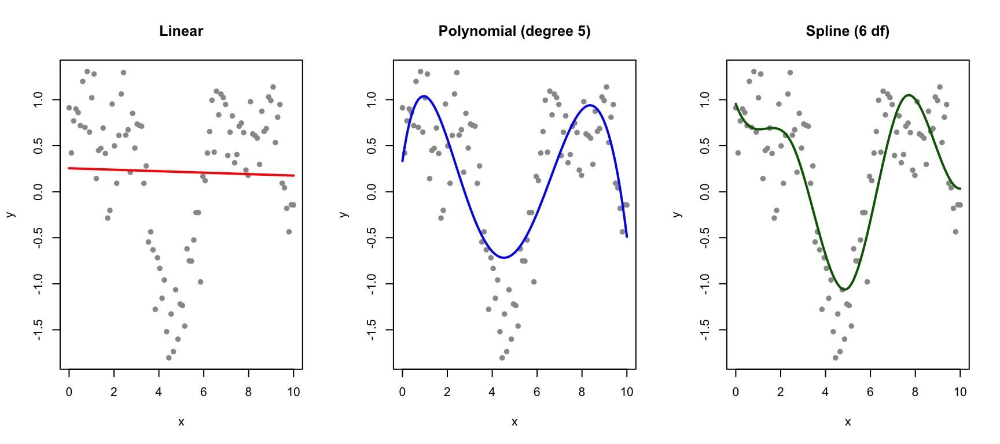
Figure 29.8: Comparison of linear, polynomial, and spline fits for non-linear data
Natural Splines
Natural splines add the constraint that the function is linear beyond the boundary knots. This prevents the wild behavior that polynomials often exhibit at the edges:
Code
# Compare B-spline and natural splinefit_bs <-lm(y ~bs(x, df =6), data = data)fit_ns <-lm(y ~ns(x, df =6), data = data)# Extend prediction range to see edge behaviorx_ext <-seq(-2, 12, length.out =200)pred_bs <-predict(fit_bs, newdata =data.frame(x = x_ext))pred_ns <-predict(fit_ns, newdata =data.frame(x = x_ext))plot(x, y, pch =16, col ="gray60", xlim =c(-2, 12), ylim =c(-3, 3),main ="B-spline vs Natural Spline at Boundaries")lines(x_ext, pred_bs, col ="blue", lwd =2)lines(x_ext, pred_ns, col ="darkgreen", lwd =2)abline(v =range(x), lty =2, col ="gray")legend("topright", c("B-spline", "Natural spline", "Data range"),col =c("blue", "darkgreen", "gray"), lty =c(1, 1, 2), lwd =c(2, 2, 1))
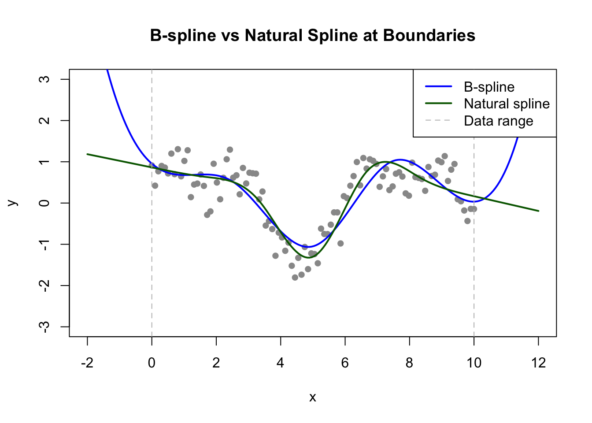
Figure 29.9: Natural splines constrain the fit to be linear beyond the data boundaries, reducing edge effects
Smoothing Splines
Smoothing splines take a different approach: instead of pre-specifying knots, they place a knot at every data point and control smoothness through a penalty on the second derivative:
The smoothing parameter \(\lambda\) is typically chosen by cross-validation:
Code
# Fit smoothing spline with cross-validationsmooth_fit <-smooth.spline(x, y, cv =TRUE)plot(x, y, pch =16, col ="gray60", main ="Smoothing Spline")lines(smooth_fit, col ="purple", lwd =2)cat("Optimal degrees of freedom:", round(smooth_fit$df, 2), "\n")
Optimal degrees of freedom: 14.81
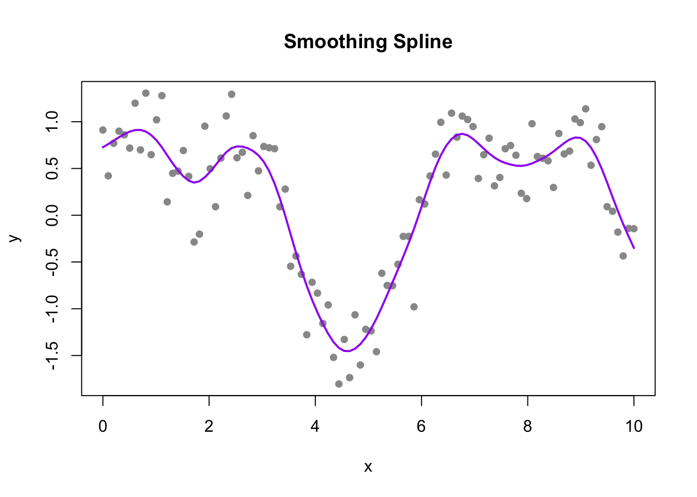
Figure 29.10: Smoothing spline with automatic cross-validation selection of the smoothing parameter
Choosing the Right Approach
Regression splines (bs, ns): When you want to include splines in a regression model with other predictors
Natural splines: When extrapolation behavior matters
Smoothing splines: For exploratory smoothing with automatic tuning
LOESS: For local, non-parametric smoothing (especially useful for visualization)
29.9 LOESS: Flexible Non-Parametric Smoothing
LOESS (Locally Estimated Scatterplot Smoothing) (Cleveland 1979) fits local regressions to subsets of data, weighted by distance from each point.
Code
# Compare linear regression and LOESSset.seed(123)x <-seq(0, 4*pi, length.out =100)y <-sin(x) +rnorm(100, sd =0.3)plot(x, y, pch =16, col ="gray60", main ="Linear vs LOESS")abline(lm(y ~ x), col ="red", lwd =2)lines(x, predict(loess(y ~ x, span =0.3)), col ="blue", lwd =2)legend("topright", c("Linear", "LOESS"), col =c("red", "blue"), lwd =2)
Figure 29.11: Comparison of linear regression and LOESS smoothing for non-linear data
The span parameter controls smoothness: smaller values fit more locally (more flexible), larger values average more broadly (smoother).
29.10 Classification
When the response is categorical, we have a classification problem rather than regression. The goal is to predict which category an observation belongs to.
Logistic regression produces probabilities that can be converted to class predictions.
Decision trees recursively partition the feature space based on simple rules.
Random forests combine many decision trees for more robust predictions.
29.11 K-Nearest Neighbors
K-nearest neighbors (kNN) is one of the simplest and most intuitive classification algorithms. To classify a new observation, kNN finds the k closest observations in the training data and assigns the most common class among those neighbors.
Code
# Simulate two-class dataset.seed(42)n <-100class1 <-data.frame(x1 =rnorm(n/2, mean =2, sd =1),x2 =rnorm(n/2, mean =2, sd =1),class ="A")class2 <-data.frame(x1 =rnorm(n/2, mean =4, sd =1),x2 =rnorm(n/2, mean =4, sd =1),class ="B")train_data <-rbind(class1, class2)# New point to classifynew_point <-data.frame(x1 =3.2, x2 =3.5)# Plotplot(train_data$x1, train_data$x2,col =ifelse(train_data$class =="A", "blue", "red"),pch =16, xlab ="Feature 1", ylab ="Feature 2",main ="K-Nearest Neighbors (k=5)")points(new_point$x1, new_point$x2, pch =8, cex =2, lwd =2)# Find 5 nearest neighborsdistances <-sqrt((train_data$x1 - new_point$x1)^2+ (train_data$x2 - new_point$x2)^2)nearest <-order(distances)[1:5]# Draw circles around nearest neighborspoints(train_data$x1[nearest], train_data$x2[nearest],cex =2, col =ifelse(train_data$class[nearest] =="A", "blue", "red"))legend("topleft", c("Class A", "Class B", "New point"),col =c("blue", "red", "black"), pch =c(16, 16, 8))
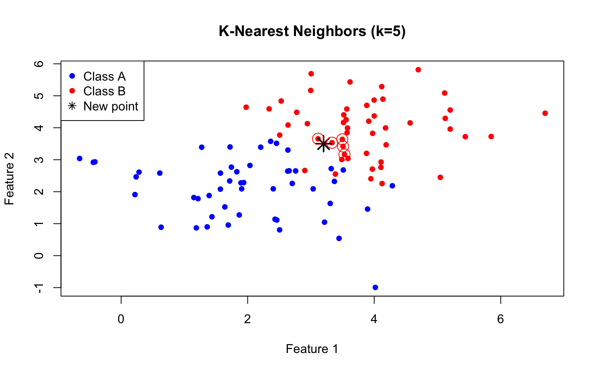
Figure 29.12: K-nearest neighbors classification: the new point (star) is classified based on its nearest neighbors
The choice of k is critical and illustrates the bias-variance tradeoff:
Small k (e.g., k=1): Very flexible, low bias but high variance. The decision boundary is jagged and sensitive to individual training points—prone to overfitting.
Large k: Smoother decision boundary, higher bias but lower variance. May miss local patterns—prone to underfitting.
Figure 29.13: Effect of k on kNN classification: small k creates complex boundaries (potential overfitting), large k creates smooth boundaries (potential underfitting)
Selecting k with Cross-Validation
We choose k by evaluating classification accuracy across different values using cross-validation:
Code
# Evaluate different k valuesset.seed(123)k_values <-seq(1, 50, by =2)# Simple holdout validationtest_idx <-sample(1:nrow(train_data), 30)train_subset <- train_data[-test_idx, ]test_subset <- train_data[test_idx, ]accuracy <-sapply(k_values, function(k) { pred <-knn(train = train_subset[, 1:2],test = test_subset[, 1:2],cl = train_subset$class,k = k)mean(pred == test_subset$class)})train_accuracy <-sapply(k_values, function(k) { pred <-knn(train = train_subset[, 1:2],test = train_subset[, 1:2],cl = train_subset$class,k = k)mean(pred == train_subset$class)})plot(k_values, train_accuracy, type ="l", col ="blue", lwd =2,xlab ="k (number of neighbors)", ylab ="Accuracy",main ="Training vs Test Accuracy", ylim =c(0.5, 1))lines(k_values, accuracy, col ="red", lwd =2)legend("bottomright", c("Training", "Test"), col =c("blue", "red"), lwd =2)
Figure 29.14: Cross-validation accuracy for different values of k: accuracy on training data decreases with k, but test accuracy peaks at intermediate values
Notice that training accuracy is perfect (1.0) when k=1—each point is its own nearest neighbor. But test accuracy tells the true story of generalization performance.
29.12 Confusion Matrices
Classification performance is evaluated with a confusion matrix:
Predicted Positive
Predicted Negative
Actual Positive
True Positive (TP)
False Negative (FN)
Actual Negative
False Positive (FP)
True Negative (TN)
Key metrics: - Accuracy: (TP + TN) / Total - Sensitivity (Recall): TP / (TP + FN) — how many positives were caught - Specificity: TN / (TN + FP) — how many negatives were correctly identified - Precision: TP / (TP + FP) — among positive predictions, how many were correct
The Problem with Accuracy
Accuracy can be misleading with imbalanced classes. If 95% of emails are legitimate, a classifier that labels everything as “not spam” achieves 95% accuracy while being completely useless for its intended purpose.
Code
# Imbalanced class exampleset.seed(42)# 95% negative, 5% positive (e.g., rare disease screening)n <-1000actual <-factor(c(rep("Negative", 950), rep("Positive", 50)))# Naive classifier: always predict negativenaive_pred <-factor(rep("Negative", n), levels =c("Negative", "Positive"))# Calculate metricsTP <-sum(naive_pred =="Positive"& actual =="Positive")TN <-sum(naive_pred =="Negative"& actual =="Negative")FP <-sum(naive_pred =="Positive"& actual =="Negative")FN <-sum(naive_pred =="Negative"& actual =="Positive")cat("Accuracy:", (TP + TN) / n, "\n")
F1 Score: When you care about both precision and recall equally
Sensitivity/Recall: When missing positives is costly (disease screening)
Precision: When false positives are costly (spam filtering)
Balanced Accuracy: Quick summary for imbalanced data
29.13 ROC Curves and AUC
Many classifiers output probabilities rather than hard class labels. By varying the threshold for classifying as positive, we trade off sensitivity against specificity.
The Receiver Operating Characteristic (ROC) curve plots sensitivity (true positive rate) against 1 - specificity (false positive rate) at all possible thresholds.
Figure 29.17: Precision-recall curve for imbalanced classification; the horizontal dashed line shows baseline precision (proportion of positives)
29.14 The Curse of Dimensionality
We described how methods such as LDA and QDA are not meant to be used with many predictors \(p\) because the number of parameters that we need to estimate becomes too large. Kernel methods such as kNN or local regression do not have model parameters to estimate. However, they also face a challenge when multiple predictors are used due to what is referred to as the curse of dimensionality. The dimension here refers to the fact that when we have \(p\) predictors, the distance between two observations is computed in \(p\)-dimensional space.
A useful way of understanding the curse of dimensionality is by considering how large we have to make a span/neighborhood/window to include a given percentage of the data. Remember that with larger neighborhoods, our methods lose flexibility.
For example, suppose we have one continuous predictor with equally spaced points in the [0,1] interval and we want to create windows that include 1/10th of data. Then it’s easy to see that our windows have to be of size 0.1.
Now, for two predictors, if we decide to keep the neighborhood just as small (10% for each dimension), we include only 1 point. If we want to include 10% of the data, then we need to increase the size of each side of the square to \(\sqrt{.10} \approx .316\).
Using the same logic, if we want to include 10% of the data in a three-dimensional space, then the side of each cube is \(\sqrt[3]{.10} \approx 0.464\). In general, to include 10% of the data in a case with \(p\) dimensions, we need an interval with each side of size \(\sqrt[p]{.10}\) of the total. This proportion gets close to 1 quickly, and if the proportion is 1 it means we include all the data and are no longer smoothing.
Code
p <-1:100plot(p, .1^(1/p), type ="l", lwd =2, col ="steelblue",xlab ="Number of Dimensions (p)",ylab ="Side Length to Include 10% of Data",main ="The Curse of Dimensionality",ylim =c(0, 1))abline(h =1, lty =2, col ="gray50")
Figure 29.18: As dimensions increase, the neighborhood size needed to include a fixed proportion of data grows rapidly. By 100 dimensions, any ‘local’ neighborhood must span nearly the entire data range.
By the time we reach 100 predictors, the neighborhood is no longer very local, as each side covers almost the entire dataset.
This motivates the use of methods that adapt to higher dimensions while still producing interpretable models. Decision trees and random forests are examples of such methods.
29.15 Decision Trees (CART)
Classification and Regression Trees (CART) make predictions by recursively partitioning the feature space into regions. At each node, the algorithm asks a yes/no question about a single feature, splitting observations into two groups. The process continues until a stopping criterion is met.
Motivating Example: Olive Oil Classification
To motivate decision trees, consider a dataset that includes the breakdown of olive oil composition into 8 fatty acids:
We will try to predict the region of origin using the fatty acid composition values as predictors.
Code
table(olive$region)
Northern Italy Sardinia Southern Italy
151 98 323
We remove the area column because we won’t use it as a predictor.
Code
olive <-select(olive, -area)
If we examine the distribution of each predictor stratified by region, we see that eicosenoic is only present in Southern Italy and that linoleic separates Northern Italy from Sardinia:
Figure 29.19: Distribution of fatty acid composition by region. Some predictors like eicosenoic and linoleic clearly separate regions.
This implies that we should be able to build an algorithm that predicts perfectly. We can see this clearly by plotting the values for eicosenoic and linoleic:
Code
olive %>%ggplot(aes(eicosenoic, linoleic, color = region)) +geom_point() +geom_vline(xintercept =0.065, lty =2) +geom_segment(x =-0.2, y =10.54, xend =0.065, yend =10.54,color ="black", lty =2) +labs(title ="Perfect Classification with Simple Rules")
Figure 29.20: With just two predictors, we can draw decision boundaries that perfectly separate the regions
By eye, we can construct a prediction rule that partitions the predictor space so that each partition contains outcomes of only one category:
If eicosenoic > 0.065, predict Southern Italy
If not, then if linoleic > 10.535, predict Sardinia
Otherwise, predict Northern Italy
This is exactly what a decision tree does—it learns these rules from data. A tree is basically a flow chart of yes/no questions. The general idea is to use data to create these trees with predictions at the ends, referred to as nodes.
How Trees Work
The key idea: find the split that best separates the data at each step.
Regression and decision trees operate by predicting an outcome variable \(Y\) by partitioning the predictors. We partition the predictor space into \(J\) non-overlapping regions, \(R_1, R_2, \ldots, R_J\), and then for any predictor \(x\) that falls within region \(R_j\), we estimate \(f(x)\) with the average (for regression) or majority class (for classification) of the training observations in that region.
Trees create partitions recursively. We start with one partition, the entire predictor space. After the first step we have two partitions. After the second step we split one of these partitions into two and have three partitions, then four, and so on.
Once we select a partition to split, we find a predictor \(j\) and value \(s\) that define two new partitions:
(with \(0 \times \log(0)\) defined as 0). Both Gini and entropy are 0 for perfectly pure nodes and increase as the class distribution becomes more mixed.
Code
library(rpart)library(rpart.plot)# Build a classification treedata(iris)tree_class <-rpart(Species ~ ., data = iris, method ="class")# Visualize with rpart.plotrpart.plot(tree_class, extra =104, box.palette ="RdYlGn",main ="Classification Tree for Iris Species")
Figure 29.21: A CART decision tree for classifying iris species. Each node shows the predicted class, proportion of observations, and the splitting rule.
Interpreting Tree Output
The tree visualization shows:
Node prediction: The predicted class (or value for regression)
Split rule: The feature and threshold used to split
Proportions: Distribution of classes at each node
Sample size: Number of observations reaching each node
Code
# Detailed tree summarysummary(tree_class, cp =0.1)
Call:
rpart(formula = Species ~ ., data = iris, method = "class")
n= 150
CP nsplit rel error xerror xstd
1 0.50 0 1.00 1.18 0.05017303
2 0.44 1 0.50 0.71 0.06115009
3 0.01 2 0.06 0.12 0.03322650
Variable importance
Petal.Width Petal.Length Sepal.Length Sepal.Width
34 31 21 14
Node number 1: 150 observations, complexity param=0.5
predicted class=setosa expected loss=0.6666667 P(node) =1
class counts: 50 50 50
probabilities: 0.333 0.333 0.333
left son=2 (50 obs) right son=3 (100 obs)
Primary splits:
Petal.Length < 2.45 to the left, improve=50.00000, (0 missing)
Petal.Width < 0.8 to the left, improve=50.00000, (0 missing)
Sepal.Length < 5.45 to the left, improve=34.16405, (0 missing)
Sepal.Width < 3.35 to the right, improve=19.03851, (0 missing)
Surrogate splits:
Petal.Width < 0.8 to the left, agree=1.000, adj=1.00, (0 split)
Sepal.Length < 5.45 to the left, agree=0.920, adj=0.76, (0 split)
Sepal.Width < 3.35 to the right, agree=0.833, adj=0.50, (0 split)
Node number 2: 50 observations
predicted class=setosa expected loss=0 P(node) =0.3333333
class counts: 50 0 0
probabilities: 1.000 0.000 0.000
Node number 3: 100 observations, complexity param=0.44
predicted class=versicolor expected loss=0.5 P(node) =0.6666667
class counts: 0 50 50
probabilities: 0.000 0.500 0.500
left son=6 (54 obs) right son=7 (46 obs)
Primary splits:
Petal.Width < 1.75 to the left, improve=38.969400, (0 missing)
Petal.Length < 4.75 to the left, improve=37.353540, (0 missing)
Sepal.Length < 6.15 to the left, improve=10.686870, (0 missing)
Sepal.Width < 2.45 to the left, improve= 3.555556, (0 missing)
Surrogate splits:
Petal.Length < 4.75 to the left, agree=0.91, adj=0.804, (0 split)
Sepal.Length < 6.15 to the left, agree=0.73, adj=0.413, (0 split)
Sepal.Width < 2.95 to the left, agree=0.67, adj=0.283, (0 split)
Node number 6: 54 observations
predicted class=versicolor expected loss=0.09259259 P(node) =0.36
class counts: 0 49 5
probabilities: 0.000 0.907 0.093
Node number 7: 46 observations
predicted class=virginica expected loss=0.02173913 P(node) =0.3066667
class counts: 0 1 45
probabilities: 0.000 0.022 0.978
Regression Trees
When the outcome is continuous, we call the method a regression tree. To illustrate, we will use poll data from the 2008 presidential election where we try to estimate the conditional expectation of poll margin \(Y\) given day \(x\).
Code
data("polls_2008")qplot(day, margin, data = polls_2008) +labs(title ="2008 Presidential Poll Data", x ="Days before election", y ="Poll margin")
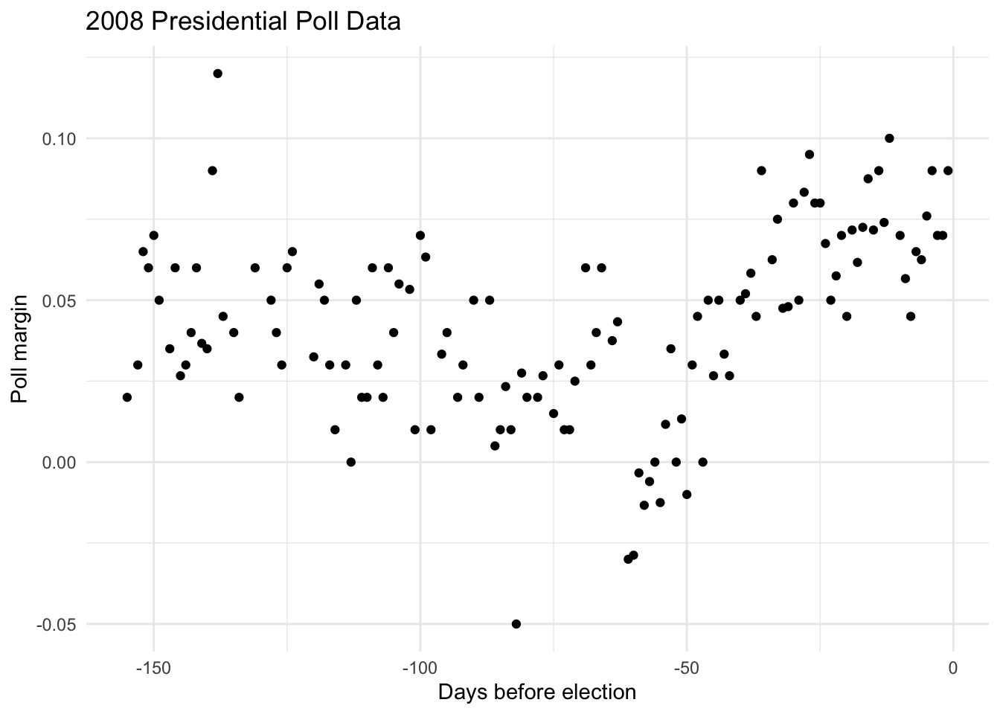
Figure 29.22: 2008 presidential poll data: margin (Obama - McCain) over time
Let’s fit a regression tree using the rpart function:
Code
fit <-rpart(margin ~ ., data = polls_2008)rafalib::mypar()plot(fit, margin =0.1)text(fit, cex =0.75)
Figure 29.23: Regression tree for poll data showing where the algorithm decided to split
The tree shows that the first split is made at day 39.5, then further splits occur at days 86.5, 49.5, 117.5, and so on. The final estimate \(\hat{f}(x)\) is a step function:
Code
polls_2008 %>%mutate(y_hat =predict(fit)) %>%ggplot() +geom_point(aes(day, margin)) +geom_step(aes(day, y_hat), col ="red", linewidth =1) +labs(title ="Regression Tree Fit", x ="Day", y ="Poll margin")
Figure 29.24: Regression tree predictions for poll data create a step function
Trees can also be applied to multiple predictors:
Code
# Build a regression treetree_reg <-rpart(mpg ~ wt + hp + cyl, data = mtcars, method ="anova")rpart.plot(tree_reg, extra =101, box.palette ="Blues",main ="Regression Tree for MPG")
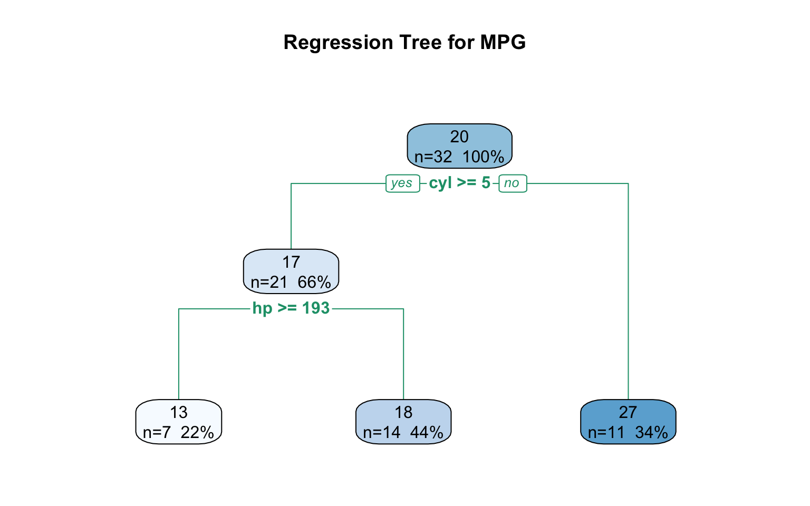
Figure 29.25: A regression tree predicting car fuel efficiency (mpg) from weight and horsepower
The Decision Boundary
Trees partition the feature space into rectangular regions:
Figure 29.26: Decision tree partition of the feature space. Each rectangular region is assigned to a class based on the majority vote of training points in that region.
Controlling Tree Complexity
Trees easily overfit—they can keep splitting until each leaf contains a single observation. Several parameters control complexity:
cp (complexity parameter): Every time we split and define two new partitions, our training set RSS decreases. The RSS must improve by a factor of cp for the new partition to be added. Large values of cp force the algorithm to stop earlier, resulting in fewer nodes.
minsplit: Minimum observations required in a partition before attempting to split further. The default in rpart is 20.
minbucket: Minimum number of observations in each terminal node (leaf). Defaults to round(minsplit/3).
maxdepth: Maximum depth of the tree
If we set cp = 0 and minsplit = 2, our prediction becomes as flexible as possible and simply memorizes the training data—a clear case of overfitting:
Code
fit_overfit <-rpart(margin ~ ., data = polls_2008,control =rpart.control(cp =0, minsplit =2))polls_2008 %>%mutate(y_hat =predict(fit_overfit)) %>%ggplot() +geom_point(aes(day, margin)) +geom_step(aes(day, y_hat), col ="red") +labs(title ="Overfitting with cp = 0", x ="Day", y ="Poll margin")
Figure 29.27: With cp=0 and minsplit=2, the tree overfits by memorizing every point in the training data
The larger these values are, the more data is averaged to compute a predictor, reducing variability but restricting flexibility. We use cross-validation to select the optimal balance.
Code
par(mfrow =c(1, 3))# Simple tree (high cp)tree_simple <-rpart(Species ~ ., data = iris, cp =0.1)rpart.plot(tree_simple, main ="cp = 0.1 (simple)")# Medium treetree_medium <-rpart(Species ~ ., data = iris, cp =0.02)rpart.plot(tree_medium, main ="cp = 0.02 (medium)")# Complex tree (low cp)tree_complex <-rpart(Species ~ ., data = iris, cp =0.001)rpart.plot(tree_complex, main ="cp = 0.001 (complex)")
Figure 29.28: Effect of the complexity parameter on tree structure: smaller cp allows more splits and greater complexity
Pruning with Cross-Validation
The optimal complexity is typically chosen by cross-validation:
Code
# Fit full treefull_tree <-rpart(Species ~ ., data = iris, cp =0.001)# Plot CV error vs complexityplotcp(full_tree)# Print CP tableprintcp(full_tree)
Figure 29.29: Cross-validation error as a function of tree complexity. The dashed line shows one standard error above the minimum, often used to select a simpler tree.
Advantages and Disadvantages of Trees
Advantages: - Highly interpretable—easy to explain to non-statisticians - Handle both numeric and categorical predictors - Capture non-linear relationships and interactions automatically - Robust to outliers and don’t require feature scaling
Disadvantages: - High variance—small changes in data can produce very different trees - Prone to overfitting without careful tuning - Axis-aligned splits can’t capture diagonal relationships efficiently - Generally lower predictive accuracy than ensemble methods
29.16 Random Forests
Random forests(Breiman 2001) are a very popular machine learning approach that addresses the shortcomings of decision trees using a clever idea. The goal is to improve prediction performance and reduce instability by averaging multiple decision trees (a forest of trees constructed with randomness). It has two features that help accomplish this.
The first step is bootstrap aggregation or bagging. The general idea is to generate many predictors, each using regression or classification trees, and then form a final prediction based on the average prediction of all these trees. To assure that the individual trees are not the same, we use the bootstrap to induce randomness. These two features combined explain the name: the bootstrap makes the individual trees randomly different, and the combination of trees is the forest.
The Random Forest Algorithm
The specific steps are:
Build \(B\) decision trees using the training set. We refer to the fitted models as \(T_1, T_2, \dots, T_B\).
For every observation in the test set, form a prediction \(\hat{y}_j\) using tree \(T_j\).
For continuous outcomes, form a final prediction with the average \(\hat{y} = \frac{1}{B} \sum_{j=1}^B \hat{y}_j\). For categorical data classification, predict \(\hat{y}\) with majority vote (most frequent class among \(\hat{y}_1, \dots, \hat{y}_B\)).
To create \(T_j, \, j=1,\ldots,B\) from the training set:
Create a bootstrap training set by sampling \(N\) observations from the training set with replacement. This is the first way to induce randomness.
At each split, consider only a random subset of \(m\) features (typically \(m = \sqrt{p}\) for classification, \(m = p/3\) for regression). This reduces correlation between trees in the forest, thereby improving prediction accuracy.
The randomness serves two purposes: - Bagging reduces variance by averaging many noisy but unbiased trees - Random feature selection decorrelates the trees, making the average more effective
Why Averaging Produces Smooth Estimates
A key insight is that the average of many step functions can be smooth. Let’s illustrate with the polls data:
Code
par(mfrow =c(1, 2))# Single tree (from before)fit_tree <-rpart(margin ~ ., data = polls_2008)polls_2008 %>%mutate(y_hat =predict(fit_tree)) %>%with(plot(day, margin, pch =16, cex =0.5,main ="Single Regression Tree"))polls_2008 %>%mutate(y_hat =predict(fit_tree)) %>%with(lines(day, y_hat, col ="red", type ="s", lwd =2))# Random forestfit_rf <-randomForest(margin ~ ., data = polls_2008)
Error in `randomForest()`:
! could not find function "randomForest"
Error in `mutate()`:
ℹ In argument: `y_hat = predict(fit_rf, newdata = polls_2008)`.
Caused by error:
! object 'fit_rf' not found
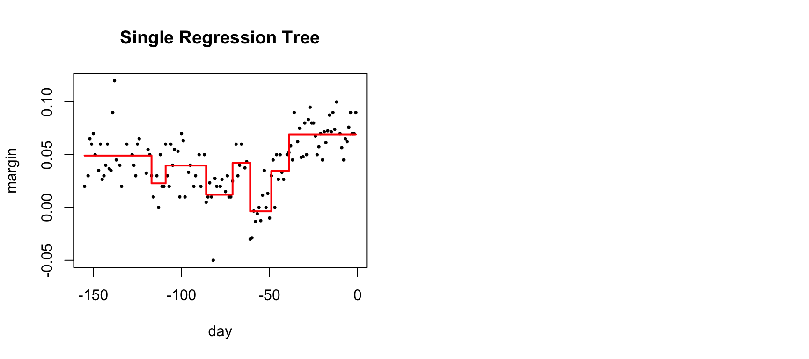
Figure 29.30: Random forest predictions are much smoother than single trees because averaging many step functions produces a smooth curve
Notice that the random forest estimate is much smoother than what we achieved with the single regression tree. This is possible because the average of many step functions can be smooth—each bootstrap sample produces a slightly different tree, and their average traces out a smooth curve.
Random Forests in R
Code
library(randomForest)set.seed(42)# Fit random forestrf_model <-randomForest(Species ~ ., data = iris,ntree =500, # Number of treesmtry =2, # Features tried at each splitimportance =TRUE) # Calculate variable importance# Model summaryprint(rf_model)
Call:
randomForest(formula = Species ~ ., data = iris, ntree = 500, mtry = 2, importance = TRUE)
Type of random forest: classification
Number of trees: 500
No. of variables tried at each split: 2
OOB estimate of error rate: 4%
Confusion matrix:
setosa versicolor virginica class.error
setosa 50 0 0 0.00
versicolor 0 47 3 0.06
virginica 0 3 47 0.06
Code
# Plot error vs number of treesplot(rf_model, main ="Random Forest: Error vs. Number of Trees")legend("topright", colnames(rf_model$err.rate), col =1:4, lty =1:4)
Figure 29.31: Random forest OOB error rate decreasing as more trees are added
Out-of-Bag (OOB) Error
Each bootstrap sample uses about 63% of observations. The remaining 37% (out-of-bag samples) provide a built-in test set:
Figure 29.32: Variable importance from random forest: Mean Decrease Accuracy measures how much removing a variable hurts prediction; Mean Decrease Gini measures the total reduction in node impurity
Mean Decrease Accuracy: For each tree, predictions are made on OOB samples. Then the values of variable \(j\) are randomly permuted, and predictions are made again. The decrease in accuracy from permutation measures importance.
Mean Decrease Gini: Total decrease in Gini impurity from splits on variable \(j\), averaged over all trees.
Tuning Random Forests
Key parameters to tune:
ntree: Number of trees (more is generally better, but with diminishing returns)
mtry: Number of features considered at each split
nodesize: Minimum size of terminal nodes
Code
# Tune mtryoob_error <-sapply(1:4, function(m) { rf <-randomForest(Species ~ ., data = iris, mtry = m, ntree =200) rf$err.rate[200, "OOB"]})plot(1:4, oob_error, type ="b", pch =19,xlab ="mtry (features at each split)",ylab ="OOB Error Rate",main ="Tuning mtry Parameter")
Figure 29.33: Random forest OOB error as a function of mtry (number of features considered at each split)
Random Forest for Regression
Code
# Regression random forestset.seed(42)rf_reg <-randomForest(mpg ~ ., data = mtcars, ntree =500, importance =TRUE)# Performancecat("Variance explained:", round(rf_reg$rsq[500] *100, 1), "%\n")
Variance explained: 83.8 %
Code
cat("MSE:", round(rf_reg$mse[500], 2), "\n")
MSE: 5.71
Code
# Variable importance for regressionvarImpPlot(rf_reg, main ="Variable Importance for MPG Prediction")
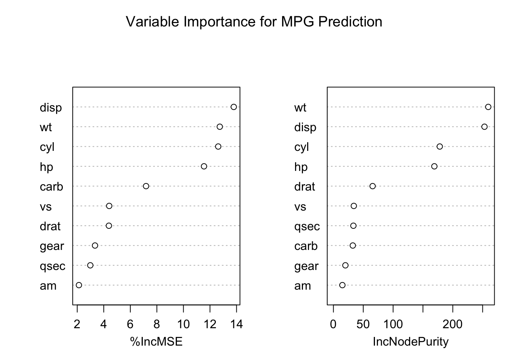
29.17 Support Vector Machines (SVM)
Support Vector Machines(Cortes and Vapnik 1995) find the hyperplane that best separates classes by maximizing the margin—the distance between the boundary and the nearest points from each class.
The Maximum Margin Classifier
For linearly separable data, infinitely many lines could separate the classes. SVM chooses the line with the largest margin:
Code
library(e1071)# Create simple 2D dataset.seed(42)n <-40x1 <-c(rnorm(n/2, mean =0), rnorm(n/2, mean =3))x2 <-c(rnorm(n/2, mean =0), rnorm(n/2, mean =3))y <-factor(c(rep(-1, n/2), rep(1, n/2)))svm_data <-data.frame(x1, x2, y)# Fit linear SVMsvm_linear <-svm(y ~ x1 + x2, data = svm_data, kernel ="linear",cost =10, scale =FALSE)# Plotplot(svm_linear, svm_data, x1 ~ x2,col =c("lightblue", "lightpink"),symbolPalette =c("blue", "red"),svSymbol ="x", dataSymbol ="o")
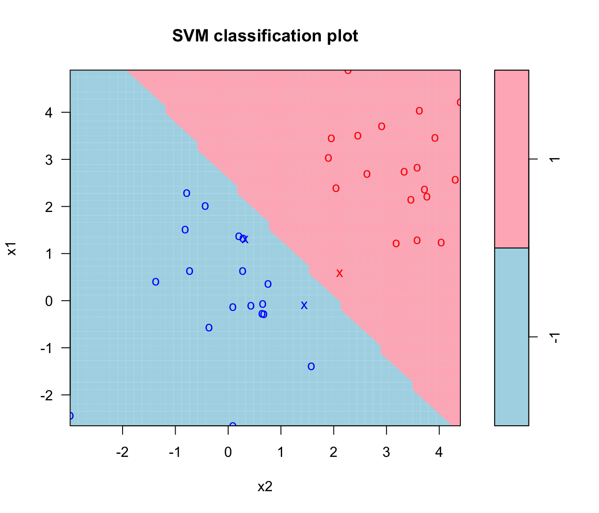
Figure 29.34: Support Vector Machine concept: the decision boundary (solid line) maximizes the margin (distance to nearest points). Support vectors are the points on the margin boundaries.
Soft Margin and the Cost Parameter
Real data is rarely perfectly separable. Soft margin SVM allows some points to violate the margin, controlled by the cost parameter \(C\):
High C: Small margin, few violations (may overfit)
Low C: Large margin, more violations (may underfit)
SVM is inherently binary, but extends to multiple classes via:
One-vs-One: Fit \(\binom{K}{2}\) classifiers for all pairs of classes; classify by voting
One-vs-All: Fit \(K\) classifiers (each class vs. rest); classify to highest-scoring class
R’s svm() uses one-vs-one by default.
Support Vector Regression (SVR)
SVMs can also be used for regression problems. Support Vector Regression works by fitting a tube of width \(\epsilon\) around the data—points inside the tube contribute no loss, while points outside are penalized.
The key idea is that instead of minimizing squared errors (like in linear regression), SVR minimizes how much predictions deviate beyond a tolerance margin \(\epsilon\):
This is called the \(\epsilon\)-insensitive loss function.
Code
# Generate non-linear dataset.seed(42)n <-100x <-seq(0, 4*pi, length.out = n)y <-sin(x) +rnorm(n, sd =0.3)svr_data <-data.frame(x = x, y = y)# Fit SVR with RBF kernelsvr_model <-svm(y ~ x, data = svr_data, kernel ="radial",epsilon =0.3, cost =10)# Predictionssvr_data$pred <-predict(svr_model, svr_data)# Plotplot(x, y, pch =16, col ="gray60", main ="Support Vector Regression")lines(x, svr_data$pred, col ="blue", lwd =2)lines(x, sin(x), col ="red", lwd =2, lty =2)legend("topright", c("SVR fit", "True function"),col =c("blue", "red"), lty =c(1, 2), lwd =2)
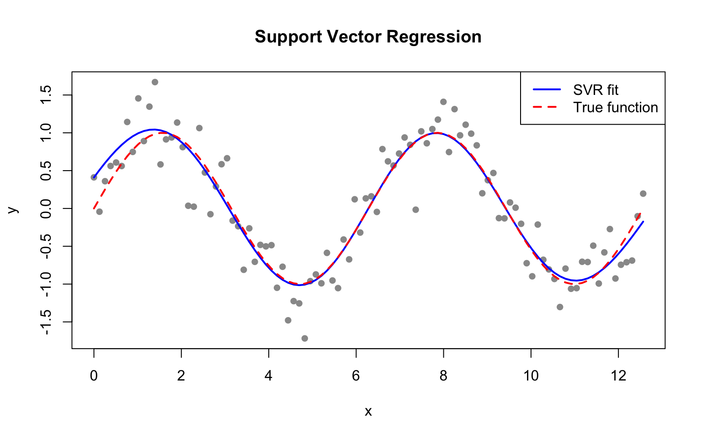
Figure 29.35: Support Vector Regression fits a tube around the data. Points within the tube (width epsilon) have zero loss.
Key SVR parameters:
epsilon: Width of the insensitive tube. Larger values give smoother fits.
cost (C): Penalty for points outside the tube. Higher C fits the data more closely.
kernel: As with classification, RBF kernels can capture non-linear patterns.
Code
par(mfrow =c(1, 3))for (eps inc(0.1, 0.3, 0.5)) { svr_fit <-svm(y ~ x, data = svr_data, kernel ="radial",epsilon = eps, cost =10)plot(x, y, pch =16, col ="gray60", main =paste("epsilon =", eps))lines(x, predict(svr_fit), col ="blue", lwd =2)}
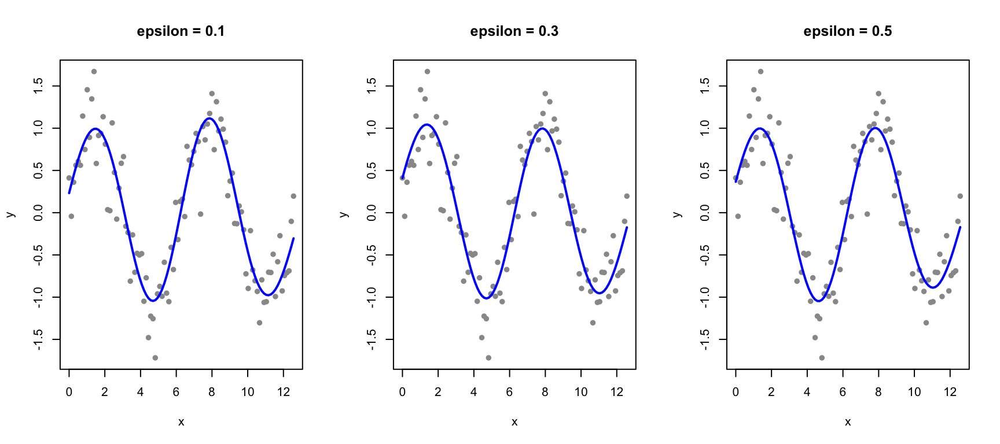
Figure 29.36: Effect of epsilon on SVR: larger epsilon creates wider tubes and smoother fits
SVM vs. Other Methods
Advantages of SVM: - Effective in high-dimensional spaces (even when dimensions > samples) - Memory efficient (uses only support vectors) - Versatile through different kernels
Disadvantages: - Doesn’t provide probability estimates directly (though they can be computed) - Sensitive to feature scaling—always standardize! - Can be slow on very large datasets - Kernel and parameter selection can be tricky
29.18 Comparing Classification Methods
Different methods have different strengths:
Method
Interpretability
Handles Non-linearity
Speed
Best For
kNN
Low
Yes (inherently)
Slow for large data
Simple problems, few features
Decision Tree
High
Yes
Fast
Interpretability needed
Random Forest
Medium
Yes
Moderate
General purpose, variable importance
SVM
Low
Yes (with kernels)
Moderate
High-dimensional data
Logistic Regression
High
No (needs feature engineering)
Fast
Probability estimates, inference
29.19 Practical Workflow
A typical statistical learning workflow:
Split data into training and test sets
Explore the training data
Build candidate models with different algorithms or parameters
Evaluate using cross-validation on training data
Select the best model
Final evaluation on held-out test data
Report honest estimates of performance
Never use test data for model building or selection—that defeats the purpose of holding it out.
29.20 When to Use Statistical Learning
Statistical learning excels when: - Prediction is the primary goal - Relationships are complex or non-linear - You have substantial data - Interpretability is less critical
Traditional statistical methods may be preferable when: - Understanding relationships matters more than prediction - Sample sizes are small - You need confidence intervals and hypothesis tests - Interpretability is essential
29.21 Connection to Dimensionality Reduction
High-dimensional data often benefit from dimensionality reduction before applying statistical learning methods. Techniques like PCA, clustering, and discriminant analysis are covered in detail in Chapter 33.
29.22 Exercises
Exercise SL.1: Decision Trees and Random Forests
Create a simple dataset where the outcome grows 0.75 units on average for every increase in a predictor:
Code
n <-1000sigma <-0.25x <-rnorm(n, 0, 1)y <-0.75* x +rnorm(n, 0, sigma)dat <-data.frame(x = x, y = y)
Use rpart to fit a regression tree and save the result to fit.
Plot the final tree so that you can see where the partitions occurred.
Make a scatterplot of y versus x along with the predicted values based on the fit.
Now model with a random forest instead of a regression tree using randomForest from the randomForest package, and remake the scatterplot with the prediction line.
Use the function plot to see if the random forest has converged or if we need more trees.
It seems that the default values for the random forest result in an estimate that is too flexible (not smooth). Re-run the random forest but this time with nodesize set at 50 and maxnodes set at 25. Remake the plot.
We see that this yields smoother results. Let’s use the train function to help us pick these values. From the caret manual we see that we can’t tune the maxnodes parameter or the nodesize argument with randomForest, so we will use the Rborist package and tune the minNode argument. Use the train function to try values minNode <- seq(5, 250, 25). See which value minimizes the estimated RMSE.
Make a scatterplot along with the prediction from the best fitted model.
Exercise SL.2: Classification Trees
Use the rpart function to fit a classification tree to the tissue_gene_expression dataset. Use the train function to estimate the accuracy. Try out cp values of seq(0, 0.05, 0.01). Plot the accuracy to report the results of the best model.
Code
library(dslabs)data("tissue_gene_expression")
Study the confusion matrix for the best fitting classification tree. What do you observe happening for placenta?
Notice that placentas are called endometrium more often than placenta. Note also that the number of placentas is just six, and that, by default, rpart requires 20 observations before splitting a node. Thus it is not possible with these parameters to have a node in which placentas are the majority. Rerun the above analysis but this time permit rpart to split any node by using the argument control = rpart.control(minsplit = 0). Does the accuracy increase? Look at the confusion matrix again.
Plot the tree from the best fitting model obtained in exercise 11.
We can see that with just six genes, we are able to predict the tissue type. Now let’s see if we can do even better with a random forest. Use the train function and the rf method to train a random forest. Try out values of mtry ranging from, at least, seq(50, 200, 25). What mtry value maximizes accuracy? To permit small nodesize to grow as we did with the classification trees, use the following argument: nodesize = 1. This will take several seconds to run. If you want to test it out, try using smaller values with ntree. Set the seed to 1990.
Use the function varImp on the output of train and save it to an object called imp.
The rpart model we ran above produced a tree that used just six predictors. Extracting the predictor names is not straightforward, but can be done. If the output of the call to train was fit_rpart, we can extract the names like this:
Code
ind <-!(fit_rpart$finalModel$frame$var =="<leaf>")tree_terms <- fit_rpart$finalModel$frame$var[ind] %>%unique() %>%as.character()tree_terms
What is the variable importance in the random forest call for these predictors? Where do they rank?
Advanced: Extract the top 50 predictors based on importance, take a subset of x with just these predictors and apply the function heatmap to see how these genes behave across the tissues. We will introduce the heatmap function in Chapter 32.
29.23 Summary
Statistical learning provides powerful tools for prediction and pattern discovery:
Overfitting is the central challenge—models that fit training data too well predict poorly
Loss functions quantify prediction error (squared loss for regression, log loss for classification)
Cross-validation provides honest estimates of predictive performance
Training error is always optimistic; test error reveals true performance
K-fold CV and bootstrap estimate generalization error
The bias-variance tradeoff governs model complexity choices
Regularization (ridge, lasso, elastic net) controls overfitting by penalizing model complexity
Ridge shrinks coefficients but keeps all predictors
Lasso performs variable selection by shrinking some coefficients to zero
Cross-validation selects the optimal regularization strength
Smoothing methods estimate flexible curves from data
Bin smoothing divides data into intervals
Kernel smoothing uses weighted averages for continuous estimates
Splines fit piecewise polynomials with controlled smoothness
LOESS fits local regressions weighted by distance
K-nearest neighbors illustrates how hyperparameters control model complexity
Decision trees (CART) recursively partition data using simple rules
Highly interpretable but prone to overfitting
Controlled via complexity parameters and pruning
Random forests combine many trees for robust predictions
Bagging and random feature selection reduce variance
Cleveland, William S. 1979. “Robust Locally Weighted Regression and Smoothing Scatterplots.”Journal of the American Statistical Association 74 (368): 829–36.
Cortes, Corinna, and Vladimir Vapnik. 1995. “Support-Vector Networks.”Machine Learning 20 (3): 273–97.
Crawley, Michael J. 2007. The r Book. John Wiley & Sons.
Hastie, Trevor, Robert Tibshirani, and Jerome Friedman. 2009. The Elements of Statistical Learning: Data Mining, Inference, and Prediction. 2nd ed. New York: Springer.
Hoerl, Arthur E., and Robert W. Kennard. 1970. “Ridge Regression: Biased Estimation for Nonorthogonal Problems.”Technometrics 12 (1): 55–67.
James, Gareth, Daniela Witten, Trevor Hastie, and Robert Tibshirani. 2023. An Introduction to Statistical Learning with Applications in r. 2nd ed. Springer. https://www.statlearning.com.
Tibshirani, Robert. 1996. “Regression Shrinkage and Selection via the Lasso.”Journal of the Royal Statistical Society: Series B (Methodological) 58 (1): 267–88.
Source Code
# Core Concepts in Statistical Learning {#sec-statistical-learning}```{r}#| echo: false#| message: falselibrary(tidyverse)theme_set(theme_minimal())```## From Inference to PredictionTraditional statistics emphasizes inference—understanding relationships, testing hypotheses, and quantifying uncertainty. Statistical learning (or machine learning) shifts focus toward prediction—building models that accurately predict outcomes for new data [@hastie2009elements].Both approaches use similar mathematical tools, but the goals differ. In inference, we want to understand the true relationship between variables. In prediction, we want accurate predictions, even if the model does not perfectly capture the underlying mechanism.## The Overfitting ProblemModels are built to fit training data as closely as possible. A linear regression minimizes squared errors; a logistic regression maximizes likelihood. But models that fit training data too well often predict poorly on new data.**Overfitting** occurs when a model captures noise specific to the training data rather than the true underlying pattern. Complex models with many parameters are especially susceptible.The solution is to evaluate models on data they have not seen—held-out test data or through cross-validation.## Loss Functions: Quantifying Prediction ErrorA **loss function** (or **cost function**) measures how wrong a prediction is. It quantifies the penalty for predicting $\hat{y}$ when the true value is $y$.### Common Loss Functions for Regression**Squared Error Loss** (L2): The most common loss for continuous outcomes:$$L(y, \hat{y}) = (y - \hat{y})^2$$Squaring penalizes large errors more heavily than small ones. Linear regression minimizes the sum of squared errors (SSE or RSS).**Absolute Error Loss** (L1): Less sensitive to outliers:$$L(y, \hat{y}) = |y - \hat{y}|$$**Mean Squared Error (MSE)** and **Root Mean Squared Error (RMSE)** are averages across all predictions:$$\text{MSE} = \frac{1}{n}\sum_{i=1}^n (y_i - \hat{y}_i)^2, \quad \text{RMSE} = \sqrt{\text{MSE}}$$### Common Loss Functions for Classification**0-1 Loss**: The simplest classification loss—1 if wrong, 0 if correct:$$L(y, \hat{y}) = \mathbb{I}(y \neq \hat{y})$$The average 0-1 loss is the **error rate**; one minus the error rate is **accuracy**.**Log Loss** (Cross-Entropy): Used when we have predicted probabilities $\hat{p}$:$$L(y, \hat{p}) = -[y \log(\hat{p}) + (1-y) \log(1-\hat{p})]$$Log loss penalizes confident wrong predictions severely—predicting probability 0.99 for the wrong class incurs much larger loss than predicting 0.6.```{r}#| label: fig-loss-functions#| fig-cap: "Comparison of squared loss (penalizes large errors heavily) versus absolute loss (more robust to outliers)"#| fig-width: 8#| fig-height: 4par(mfrow =c(1, 2))# Regression loss functionserrors <-seq(-3, 3, length.out =100)plot(errors, errors^2, type ="l", col ="blue", lwd =2,xlab ="Prediction Error (y - ŷ)", ylab ="Loss",main ="Regression Loss Functions")lines(errors, abs(errors), col ="red", lwd =2)legend("top", c("Squared (L2)", "Absolute (L1)"),col =c("blue", "red"), lwd =2)# Classification log lossp <-seq(0.01, 0.99, length.out =100)plot(p, -log(p), type ="l", col ="blue", lwd =2,xlab ="Predicted Probability for True Class", ylab ="Log Loss",main ="Classification Log Loss")abline(v =0.5, lty =2, col ="gray")```### Why Loss Functions MatterDifferent loss functions lead to different optimal predictions:- **Squared loss** → optimal prediction is the **mean**- **Absolute loss** → optimal prediction is the **median**- **0-1 loss** → optimal prediction is the **mode** (most frequent class)The choice of loss function should reflect how errors affect your application. Medical diagnosis may weight false negatives (missed disease) more heavily than false positives.## Cross-Validation### The Problem: Training Error vs. Test ErrorA fundamental insight of statistical learning is that **training error** (how well we fit the data used to build the model) is an overly optimistic estimate of **test error** (how well we predict new data).```{r}#| label: fig-train-test-error#| fig-cap: "Training error always decreases with model complexity, but test error eventually increases due to overfitting. The optimal model minimizes test error."#| fig-width: 8#| fig-height: 5# Demonstrate training vs test errorset.seed(42)n <-100x <-sort(runif(n, 0, 10))y_true <-sin(x) +0.5*cos(0.5* x)y <- y_true +rnorm(n, sd =0.3)# Split into training and testtrain_idx <-sample(1:n, 70)train_data <-data.frame(x = x[train_idx], y = y[train_idx])test_data <-data.frame(x = x[-train_idx], y = y[-train_idx])# Fit polynomials of increasing degreelibrary(splines)degrees <-1:15train_error <- test_error <-numeric(length(degrees))for (i inseq_along(degrees)) { d <- degrees[i] fit <-lm(y ~poly(x, d), data = train_data) train_error[i] <-mean((train_data$y -predict(fit, train_data))^2) test_error[i] <-mean((test_data$y -predict(fit, test_data))^2)}# Plotplot(degrees, train_error, type ="b", pch =19, col ="blue",xlab ="Model Complexity (Polynomial Degree)",ylab ="Mean Squared Error",main ="Training vs Test Error", ylim =c(0, max(test_error)))lines(degrees, test_error, type ="b", pch =19, col ="red")legend("topright", c("Training Error", "Test Error"),col =c("blue", "red"), pch =19, lty =1)abline(v = degrees[which.min(test_error)], lty =2, col ="gray")```Notice that training error keeps decreasing as complexity increases, eventually reaching near zero. But test error follows a U-shape—it decreases initially as the model captures true patterns, then increases as the model starts fitting noise.### K-Fold Cross-ValidationCross-validation estimates how well a model will generalize to new data without requiring a separate test set.**K-fold cross-validation**:1. Split data into k roughly equal parts (folds)2. For each fold: train on k-1 folds, test on the held-out fold3. Average performance across all folds```{r}#| label: fig-cross-validation#| fig-cap: "K-fold cross-validation: each fold takes turns being the test set"#| fig-width: 7#| fig-height: 5# Simple CV example with linear regressionlibrary(boot)# Generate dataset.seed(42)x <-rnorm(100)y <-2+3*x +rnorm(100)data <-data.frame(x, y)# Fit model and perform CVmodel <-glm(y ~ x, data = data)# 10-fold cross-validationcv_result <-cv.glm(data, model, K =10)cat("CV estimate of prediction error:", round(cv_result$delta[1], 3), "\n")```**Leave-one-out cross-validation (LOOCV)** is k-fold with k = n: each observation is held out once. More computationally expensive but lower variance.### Bootstrap for Error EstimationThe **bootstrap** can also estimate prediction error. The approach:1. Draw a bootstrap sample (n observations with replacement)2. Fit the model on the bootstrap sample3. Evaluate on observations NOT selected (the "out-of-bag" observations)4. Repeat and averageThis is similar to cross-validation but uses the natural ~37% of observations left out of each bootstrap sample.```{r}# Bootstrap estimate of prediction errorset.seed(123)n_boot <-100boot_errors <-numeric(n_boot)for (b in1:n_boot) {# Bootstrap sample boot_idx <-sample(1:nrow(data), replace =TRUE) oob_idx <-setdiff(1:nrow(data), unique(boot_idx))if (length(oob_idx) >0) { fit <-lm(y ~ x, data = data[boot_idx, ]) boot_errors[b] <-mean((data$y[oob_idx] -predict(fit, data[oob_idx, ]))^2) }}cat("Bootstrap estimate of prediction error:", round(mean(boot_errors), 3), "\n")```::: {.callout-tip}## Choosing a CV Strategy- **k = 5 or k = 10**: Standard choices that balance bias and variance- **LOOCV (k = n)**: Low bias but high variance; expensive for large n- **Bootstrap**: Useful when you also want confidence intervals- **Repeated CV**: Run k-fold multiple times with different splits for more stable estimates:::## Bias-Variance TradeoffPrediction error has two components:**Bias**: Error from approximating a complex reality with a simpler model. Simple models have high bias—they may miss important patterns.**Variance**: Error from sensitivity to training data. Complex models have high variance—they change substantially with different training samples.The best predictions come from models that balance bias and variance. As model complexity increases, bias decreases but variance increases. The optimal complexity minimizes total prediction error.## Regularization: Controlling Model Complexity**Regularization** addresses overfitting by adding a penalty term that discourages complex models. This is particularly important when you have many predictors relative to observations, or when predictors are correlated.### The Regularization IdeaStandard linear regression minimizes the sum of squared residuals (RSS):$$\text{RSS} = \sum_{i=1}^n (y_i - \beta_0 - \sum_{j=1}^p \beta_j x_{ij})^2$$Regularized regression adds a penalty term $\lambda P(\beta)$ that shrinks coefficients toward zero:$$\text{Minimize: } \text{RSS} + \lambda P(\beta)$$The **regularization parameter** $\lambda$ controls the strength of the penalty:- $\lambda = 0$: No penalty, equivalent to ordinary least squares- $\lambda \to \infty$: Very strong penalty, coefficients shrink toward zero### Ridge Regression (L2 Penalty)**Ridge regression** [@hoerl1970ridge] uses the sum of squared coefficients as the penalty:$$P(\beta) = \sum_{j=1}^p \beta_j^2$$This shrinks all coefficients toward zero but never exactly to zero. Ridge is particularly effective when predictors are correlated (multicollinearity).```{r}#| label: fig-ridge-path#| fig-cap: "Ridge regression coefficient paths: as lambda increases, coefficients shrink toward zero but never reach exactly zero"#| fig-width: 8#| fig-height: 5library(glmnet)# Generate sample data with correlated predictorsset.seed(42)n <-100p <-10X <-matrix(rnorm(n * p), n, p)# Create correlated predictorsX[, 2] <- X[, 1] +rnorm(n, sd =0.5)X[, 3] <- X[, 1] +rnorm(n, sd =0.5)true_beta <-c(3, -2, 1.5, rep(0, p -3))y <- X %*% true_beta +rnorm(n)# Fit ridge regression across lambda valuesridge_fit <-glmnet(X, y, alpha =0) # alpha = 0 for ridge# Plot coefficient pathsplot(ridge_fit, xvar ="lambda", main ="Ridge Regression Coefficients")```### Lasso Regression (L1 Penalty)**Lasso** (Least Absolute Shrinkage and Selection Operator) [@tibshirani1996regression] uses the sum of absolute values as the penalty:$$P(\beta) = \sum_{j=1}^p |\beta_j|$$Unlike ridge, lasso can shrink coefficients exactly to zero, effectively performing **variable selection**. This produces sparse models that are easier to interpret.```{r}#| label: fig-lasso-path#| fig-cap: "Lasso regression coefficient paths: as lambda increases, coefficients shrink and some become exactly zero (variable selection)"#| fig-width: 8#| fig-height: 5# Fit lasso regressionlasso_fit <-glmnet(X, y, alpha =1) # alpha = 1 for lassoplot(lasso_fit, xvar ="lambda", main ="Lasso Regression Coefficients")```### Elastic Net: Combining Ridge and Lasso**Elastic net** combines both penalties:$$P(\beta) = \alpha \sum_{j=1}^p |\beta_j| + (1-\alpha) \sum_{j=1}^p \beta_j^2$$The mixing parameter $\alpha$ controls the balance:- $\alpha = 0$: Pure ridge- $\alpha = 1$: Pure lasso- $0 < \alpha < 1$: CombinationElastic net is often preferred when predictors are correlated—it tends to select groups of correlated variables together.### Choosing Lambda with Cross-ValidationThe regularization parameter $\lambda$ is typically chosen by cross-validation:```{r}#| label: fig-cv-lambda#| fig-cap: "Cross-validation to select optimal lambda: the left dashed line marks the minimum error, the right marks the most regularized model within one standard error"#| fig-width: 8#| fig-height: 5# Cross-validation for lassoset.seed(123)cv_lasso <-cv.glmnet(X, y, alpha =1)# Plot cross-validation resultsplot(cv_lasso)# Optimal lambda valuescat("Lambda with minimum CV error:", round(cv_lasso$lambda.min, 4), "\n")cat("Lambda within 1 SE of minimum:", round(cv_lasso$lambda.1se, 4), "\n")```The `lambda.1se` (one standard error rule) often provides a more parsimonious model with nearly as good performance as the minimum.### Comparing Regularization Methods```{r}# Fit models with optimal lambdaridge_cv <-cv.glmnet(X, y, alpha =0)lasso_cv <-cv.glmnet(X, y, alpha =1)# Extract coefficientscoef_ols <-coef(lm(y ~ X))coef_ridge <-coef(ridge_cv, s ="lambda.1se")coef_lasso <-coef(lasso_cv, s ="lambda.1se")# Compare (excluding intercept)comparison <-data.frame(True =c(NA, true_beta),OLS =as.vector(coef_ols),Ridge =as.vector(coef_ridge),Lasso =as.vector(coef_lasso))rownames(comparison) <-c("Intercept", paste0("X", 1:p))round(comparison, 3)```Notice that lasso correctly identifies the zero coefficients (variables 4-10), while ridge shrinks them but doesn't eliminate them.::: {.callout-tip}## When to Use Each Method- **Ridge**: When you believe all predictors are relevant and want to handle multicollinearity- **Lasso**: When you want automatic variable selection and a sparse model- **Elastic Net**: When predictors are correlated and you want both selection and grouping**Important**: Always standardize predictors before applying regularization, as the penalty treats all coefficients equally. The `glmnet` function does this automatically by default.:::## Smoothing: From Simple Averages to Flexible CurvesWhen the relationship between a predictor and outcome is non-linear, we need methods more flexible than linear regression. **Smoothing** methods estimate curves by averaging nearby observations, allowing the data to reveal its own pattern.### Bin SmoothingThe simplest smoothing approach is **bin smoothing** (also called **binning**): divide the predictor into intervals (bins) and estimate the outcome as the average within each bin.```{r}#| label: fig-bin-smoothing#| fig-cap: "Bin smoothing divides data into intervals and estimates each segment as the mean of points in that bin"#| fig-width: 8#| fig-height: 5# Generate non-linear dataset.seed(42)n <-200x <-runif(n, 0, 10)y <-sin(x) +rnorm(n, sd =0.3)# Bin smoothing with different bin widthspar(mfrow =c(1, 2))# Narrow binsn_bins <-20breaks <-seq(min(x), max(x), length.out = n_bins +1)bin_means <-sapply(1:n_bins, function(i) { in_bin <- x >= breaks[i] & x < breaks[i +1]if (sum(in_bin) >0) mean(y[in_bin]) elseNA})bin_centers <- (breaks[-1] + breaks[-(n_bins +1)]) /2plot(x, y, pch =16, col ="gray60", main ="Narrow bins (20)")points(bin_centers, bin_means, col ="blue", pch =19, cex =1.5)lines(bin_centers, bin_means, col ="blue", lwd =2)# Wide binsn_bins <-5breaks <-seq(min(x), max(x), length.out = n_bins +1)bin_means <-sapply(1:n_bins, function(i) { in_bin <- x >= breaks[i] & x < breaks[i +1]if (sum(in_bin) >0) mean(y[in_bin]) elseNA})bin_centers <- (breaks[-1] + breaks[-(n_bins +1)]) /2plot(x, y, pch =16, col ="gray60", main ="Wide bins (5)")points(bin_centers, bin_means, col ="red", pch =19, cex =1.5)lines(bin_centers, bin_means, col ="red", lwd =2)```Bin smoothing illustrates the **bias-variance tradeoff** in smoothing:- **Narrow bins**: Capture local variation (low bias) but are noisy (high variance)- **Wide bins**: Smooth over noise (low variance) but may miss true curvature (high bias)The main limitation of bin smoothing is the **discontinuity** at bin boundaries—the estimate jumps from one bin to the next.### Kernel Smoothing**Kernel smoothing** improves on binning by using weighted averages, where closer points receive more weight. This creates smooth, continuous estimates.The estimate at any point $x_0$ is:$$\hat{f}(x_0) = \frac{\sum_{i=1}^n K\left(\frac{x_i - x_0}{h}\right) y_i}{\sum_{i=1}^n K\left(\frac{x_i - x_0}{h}\right)}$$where $K$ is a **kernel function** (typically Gaussian or Epanechnikov) and $h$ is the **bandwidth** controlling smoothness.```{r}#| label: fig-kernel-smoothing#| fig-cap: "Kernel smoothing uses weighted averages with Gaussian weights, creating smooth estimates"#| fig-width: 9#| fig-height: 4# Kernel smoothing functionkernel_smooth <-function(x0, x, y, bandwidth) { weights <-dnorm(x, mean = x0, sd = bandwidth)sum(weights * y) /sum(weights)}# Apply to grid of pointsx_grid <-seq(0, 10, length.out =200)par(mfrow =c(1, 3))for (bw inc(0.2, 0.5, 1.0)) { y_smooth <-sapply(x_grid, function(x0) kernel_smooth(x0, x, y, bw))plot(x, y, pch =16, col ="gray60", main =paste("Bandwidth =", bw))lines(x_grid, y_smooth, col ="blue", lwd =2)lines(x_grid, sin(x_grid), col ="red", lwd =2, lty =2)}```The **bandwidth** parameter plays the same role as the number of bins:- **Small bandwidth**: More local, follows the data closely (risk of overfitting)- **Large bandwidth**: More global, smoother curve (risk of over-smoothing)Kernel smoothing eliminates the discontinuity problem of bin smoothing while retaining its intuitive local-averaging interpretation.## Splines: Flexible Curve FittingWhile LOESS provides local smoothing, **splines** offer a more structured approach to fitting flexible curves. A spline is a piecewise polynomial function that joins smoothly at points called **knots**.### Why Splines?Linear regression assumes a straight-line relationship, which is often too restrictive. We could fit polynomial regression (e.g., $y = \beta_0 + \beta_1 x + \beta_2 x^2 + \beta_3 x^3$), but polynomials can behave erratically, especially at the edges of the data.Splines provide flexibility while maintaining smooth, well-behaved curves.### Regression Splines**Regression splines** fit piecewise polynomials at fixed knot locations. The `splines` package provides basis functions for incorporating splines into linear models:```{r}#| label: fig-spline-comparison#| fig-cap: "Comparison of linear, polynomial, and spline fits for non-linear data"#| fig-width: 9#| fig-height: 4library(splines)# Generate non-linear dataset.seed(42)x <-seq(0, 10, length.out =100)y <-sin(x) +0.5*cos(2*x) +rnorm(100, sd =0.3)data <-data.frame(x, y)# Fit different modelsfit_linear <-lm(y ~ x, data = data)fit_poly <-lm(y ~poly(x, 5), data = data)fit_spline <-lm(y ~bs(x, df =6), data = data) # B-spline with 6 df# Predictionsdata$pred_linear <-predict(fit_linear)data$pred_poly <-predict(fit_poly)data$pred_spline <-predict(fit_spline)par(mfrow =c(1, 3))plot(x, y, pch =16, col ="gray60", main ="Linear")lines(x, data$pred_linear, col ="red", lwd =2)plot(x, y, pch =16, col ="gray60", main ="Polynomial (degree 5)")lines(x, data$pred_poly, col ="blue", lwd =2)plot(x, y, pch =16, col ="gray60", main ="Spline (6 df)")lines(x, data$pred_spline, col ="darkgreen", lwd =2)```### Natural Splines**Natural splines** add the constraint that the function is linear beyond the boundary knots. This prevents the wild behavior that polynomials often exhibit at the edges:```{r}#| label: fig-natural-spline#| fig-cap: "Natural splines constrain the fit to be linear beyond the data boundaries, reducing edge effects"#| fig-width: 7#| fig-height: 5# Compare B-spline and natural splinefit_bs <-lm(y ~bs(x, df =6), data = data)fit_ns <-lm(y ~ns(x, df =6), data = data)# Extend prediction range to see edge behaviorx_ext <-seq(-2, 12, length.out =200)pred_bs <-predict(fit_bs, newdata =data.frame(x = x_ext))pred_ns <-predict(fit_ns, newdata =data.frame(x = x_ext))plot(x, y, pch =16, col ="gray60", xlim =c(-2, 12), ylim =c(-3, 3),main ="B-spline vs Natural Spline at Boundaries")lines(x_ext, pred_bs, col ="blue", lwd =2)lines(x_ext, pred_ns, col ="darkgreen", lwd =2)abline(v =range(x), lty =2, col ="gray")legend("topright", c("B-spline", "Natural spline", "Data range"),col =c("blue", "darkgreen", "gray"), lty =c(1, 1, 2), lwd =c(2, 2, 1))```### Smoothing Splines**Smoothing splines** take a different approach: instead of pre-specifying knots, they place a knot at every data point and control smoothness through a penalty on the second derivative:$$\text{Minimize: } \sum_{i=1}^n (y_i - f(x_i))^2 + \lambda \int f''(x)^2 dx$$The smoothing parameter $\lambda$ is typically chosen by cross-validation:```{r}#| label: fig-smoothing-spline#| fig-cap: "Smoothing spline with automatic cross-validation selection of the smoothing parameter"#| fig-width: 7#| fig-height: 5# Fit smoothing spline with cross-validationsmooth_fit <-smooth.spline(x, y, cv =TRUE)plot(x, y, pch =16, col ="gray60", main ="Smoothing Spline")lines(smooth_fit, col ="purple", lwd =2)cat("Optimal degrees of freedom:", round(smooth_fit$df, 2), "\n")```::: {.callout-note}## Choosing the Right Approach- **Regression splines (bs, ns)**: When you want to include splines in a regression model with other predictors- **Natural splines**: When extrapolation behavior matters- **Smoothing splines**: For exploratory smoothing with automatic tuning- **LOESS**: For local, non-parametric smoothing (especially useful for visualization):::## LOESS: Flexible Non-Parametric Smoothing**LOESS** (Locally Estimated Scatterplot Smoothing) [@cleveland1979robust] fits local regressions to subsets of data, weighted by distance from each point.```{r}#| label: fig-loess-comparison#| fig-cap: "Comparison of linear regression and LOESS smoothing for non-linear data"#| fig-width: 7#| fig-height: 5# Compare linear regression and LOESSset.seed(123)x <-seq(0, 4*pi, length.out =100)y <-sin(x) +rnorm(100, sd =0.3)plot(x, y, pch =16, col ="gray60", main ="Linear vs LOESS")abline(lm(y ~ x), col ="red", lwd =2)lines(x, predict(loess(y ~ x, span =0.3)), col ="blue", lwd =2)legend("topright", c("Linear", "LOESS"), col =c("red", "blue"), lwd =2)```The **span** parameter controls smoothness: smaller values fit more locally (more flexible), larger values average more broadly (smoother).## ClassificationWhen the response is categorical, we have a classification problem rather than regression. The goal is to predict which category an observation belongs to.**Logistic regression** produces probabilities that can be converted to class predictions.**Decision trees** recursively partition the feature space based on simple rules.**Random forests** combine many decision trees for more robust predictions.## K-Nearest Neighbors**K-nearest neighbors (kNN)** is one of the simplest and most intuitive classification algorithms. To classify a new observation, kNN finds the k closest observations in the training data and assigns the most common class among those neighbors.```{r}#| label: fig-knn-concept#| fig-cap: "K-nearest neighbors classification: the new point (star) is classified based on its nearest neighbors"#| fig-width: 8#| fig-height: 5# Simulate two-class dataset.seed(42)n <-100class1 <-data.frame(x1 =rnorm(n/2, mean =2, sd =1),x2 =rnorm(n/2, mean =2, sd =1),class ="A")class2 <-data.frame(x1 =rnorm(n/2, mean =4, sd =1),x2 =rnorm(n/2, mean =4, sd =1),class ="B")train_data <-rbind(class1, class2)# New point to classifynew_point <-data.frame(x1 =3.2, x2 =3.5)# Plotplot(train_data$x1, train_data$x2,col =ifelse(train_data$class =="A", "blue", "red"),pch =16, xlab ="Feature 1", ylab ="Feature 2",main ="K-Nearest Neighbors (k=5)")points(new_point$x1, new_point$x2, pch =8, cex =2, lwd =2)# Find 5 nearest neighborsdistances <-sqrt((train_data$x1 - new_point$x1)^2+ (train_data$x2 - new_point$x2)^2)nearest <-order(distances)[1:5]# Draw circles around nearest neighborspoints(train_data$x1[nearest], train_data$x2[nearest],cex =2, col =ifelse(train_data$class[nearest] =="A", "blue", "red"))legend("topleft", c("Class A", "Class B", "New point"),col =c("blue", "red", "black"), pch =c(16, 16, 8))```The choice of **k** is critical and illustrates the bias-variance tradeoff:- **Small k** (e.g., k=1): Very flexible, low bias but high variance. The decision boundary is jagged and sensitive to individual training points—prone to overfitting.- **Large k**: Smoother decision boundary, higher bias but lower variance. May miss local patterns—prone to underfitting.```{r}#| label: fig-knn-k-comparison#| fig-cap: "Effect of k on kNN classification: small k creates complex boundaries (potential overfitting), large k creates smooth boundaries (potential underfitting)"#| fig-width: 9#| fig-height: 4library(class)# Create a grid for visualizationx1_grid <-seq(0, 6, length.out =100)x2_grid <-seq(0, 6, length.out =100)grid <-expand.grid(x1 = x1_grid, x2 = x2_grid)par(mfrow =c(1, 3))for (k_val inc(1, 15, 50)) {# Predict on grid pred <-knn(train = train_data[, 1:2],test = grid,cl = train_data$class,k = k_val)# Plot decision regionsplot(grid$x1, grid$x2, col =ifelse(pred =="A",rgb(0, 0, 1, 0.1), rgb(1, 0, 0, 0.1)),pch =15, cex =0.5, xlab ="Feature 1", ylab ="Feature 2",main =paste("k =", k_val))points(train_data$x1, train_data$x2,col =ifelse(train_data$class =="A", "blue", "red"), pch =16)}```### Selecting k with Cross-ValidationWe choose k by evaluating classification accuracy across different values using cross-validation:```{r}#| label: fig-knn-cv#| fig-cap: "Cross-validation accuracy for different values of k: accuracy on training data decreases with k, but test accuracy peaks at intermediate values"#| fig-width: 7#| fig-height: 5# Evaluate different k valuesset.seed(123)k_values <-seq(1, 50, by =2)# Simple holdout validationtest_idx <-sample(1:nrow(train_data), 30)train_subset <- train_data[-test_idx, ]test_subset <- train_data[test_idx, ]accuracy <-sapply(k_values, function(k) { pred <-knn(train = train_subset[, 1:2],test = test_subset[, 1:2],cl = train_subset$class,k = k)mean(pred == test_subset$class)})train_accuracy <-sapply(k_values, function(k) { pred <-knn(train = train_subset[, 1:2],test = train_subset[, 1:2],cl = train_subset$class,k = k)mean(pred == train_subset$class)})plot(k_values, train_accuracy, type ="l", col ="blue", lwd =2,xlab ="k (number of neighbors)", ylab ="Accuracy",main ="Training vs Test Accuracy", ylim =c(0.5, 1))lines(k_values, accuracy, col ="red", lwd =2)legend("bottomright", c("Training", "Test"), col =c("blue", "red"), lwd =2)```Notice that training accuracy is perfect (1.0) when k=1—each point is its own nearest neighbor. But test accuracy tells the true story of generalization performance.## Confusion MatricesClassification performance is evaluated with a **confusion matrix**:|| Predicted Positive | Predicted Negative ||:--|:--:|:--:|| Actual Positive | True Positive (TP) | False Negative (FN) || Actual Negative | False Positive (FP) | True Negative (TN) |Key metrics:- **Accuracy**: (TP + TN) / Total- **Sensitivity** (Recall): TP / (TP + FN) — how many positives were caught- **Specificity**: TN / (TN + FP) — how many negatives were correctly identified- **Precision**: TP / (TP + FP) — among positive predictions, how many were correct### The Problem with AccuracyAccuracy can be misleading with **imbalanced classes**. If 95% of emails are legitimate, a classifier that labels everything as "not spam" achieves 95% accuracy while being completely useless for its intended purpose.```{r}# Imbalanced class exampleset.seed(42)# 95% negative, 5% positive (e.g., rare disease screening)n <-1000actual <-factor(c(rep("Negative", 950), rep("Positive", 50)))# Naive classifier: always predict negativenaive_pred <-factor(rep("Negative", n), levels =c("Negative", "Positive"))# Calculate metricsTP <-sum(naive_pred =="Positive"& actual =="Positive")TN <-sum(naive_pred =="Negative"& actual =="Negative")FP <-sum(naive_pred =="Positive"& actual =="Negative")FN <-sum(naive_pred =="Negative"& actual =="Positive")cat("Accuracy:", (TP + TN) / n, "\n")cat("Sensitivity (Recall):", TP / (TP + FN), "\n")cat("The classifier catches 0% of positive cases!\n")```### F1 Score and Balanced AccuracyFor imbalanced data, better metrics include:**F1 Score**: The harmonic mean of precision and recall, balancing both concerns:$$F_1 = 2 \cdot \frac{\text{Precision} \cdot \text{Recall}}{\text{Precision} + \text{Recall}} = \frac{2 \cdot TP}{2 \cdot TP + FP + FN}$$**Balanced Accuracy**: The average of sensitivity and specificity:$$\text{Balanced Accuracy} = \frac{\text{Sensitivity} + \text{Specificity}}{2}$$```{r}# Better classifier for the imbalanced dataset.seed(123)# Suppose we have a model that catches 80% of positives but has some false positivesbetter_pred <- actual # Start with actual# Correctly identify 80% of positivespos_idx <-which(actual =="Positive")neg_idx <-which(actual =="Negative")better_pred[sample(pos_idx, 10)] <-"Negative"# Miss 10 of 50 positives (20%)better_pred[sample(neg_idx, 50)] <-"Positive"# 50 false positives# Confusion matrixTP <-sum(better_pred =="Positive"& actual =="Positive")TN <-sum(better_pred =="Negative"& actual =="Negative")FP <-sum(better_pred =="Positive"& actual =="Negative")FN <-sum(better_pred =="Negative"& actual =="Positive")precision <- TP / (TP + FP)recall <- TP / (TP + FN) # Sensitivityspecificity <- TN / (TN + FP)# Calculate metricsaccuracy <- (TP + TN) / nf1 <-2* precision * recall / (precision + recall)balanced_acc <- (recall + specificity) /2cat("Accuracy:", round(accuracy, 3), "\n")cat("Precision:", round(precision, 3), "\n")cat("Recall (Sensitivity):", round(recall, 3), "\n")cat("F1 Score:", round(f1, 3), "\n")cat("Balanced Accuracy:", round(balanced_acc, 3), "\n")```::: {.callout-tip}## Which Metric to Use?- **Accuracy**: Only when classes are balanced- **F1 Score**: When you care about both precision and recall equally- **Sensitivity/Recall**: When missing positives is costly (disease screening)- **Precision**: When false positives are costly (spam filtering)- **Balanced Accuracy**: Quick summary for imbalanced data:::## ROC Curves and AUCMany classifiers output probabilities rather than hard class labels. By varying the **threshold** for classifying as positive, we trade off sensitivity against specificity.The **Receiver Operating Characteristic (ROC) curve** plots sensitivity (true positive rate) against 1 - specificity (false positive rate) at all possible thresholds.```{r}#| label: fig-roc-curve#| fig-cap: "ROC curve showing the tradeoff between sensitivity and false positive rate; the dashed diagonal represents random guessing"#| fig-width: 7#| fig-height: 6# Simulate a classifier with probabilitiesset.seed(42)n <-500actual <-factor(c(rep(1, 100), rep(0, 400))) # 20% positive# Generate predicted probabilities (imperfect classifier)probs <-c(rbeta(100, 3, 2), # Positives: higher probsrbeta(400, 2, 3)) # Negatives: lower probs# Calculate ROC curve manuallythresholds <-seq(0, 1, by =0.01)roc_data <-data.frame(threshold = thresholds,TPR =sapply(thresholds, function(t) { pred <-ifelse(probs >= t, 1, 0)sum(pred ==1& actual ==1) /sum(actual ==1) }),FPR =sapply(thresholds, function(t) { pred <-ifelse(probs >= t, 1, 0)sum(pred ==1& actual ==0) /sum(actual ==0) }))# Plot ROC curveplot(roc_data$FPR, roc_data$TPR, type ="l", lwd =2, col ="blue",xlab ="False Positive Rate (1 - Specificity)",ylab ="True Positive Rate (Sensitivity)",main ="ROC Curve")abline(0, 1, lty =2, col ="gray") # Random classifier line# Add points for specific thresholdshighlight <-c(0.3, 0.5, 0.7)for (t in highlight) { idx <-which.min(abs(roc_data$threshold - t))points(roc_data$FPR[idx], roc_data$TPR[idx], pch =19, cex =1.5)text(roc_data$FPR[idx] +0.05, roc_data$TPR[idx],paste("t =", t), cex =0.8)}legend("bottomright", c("ROC Curve", "Random Classifier"),col =c("blue", "gray"), lty =c(1, 2), lwd =c(2, 1))```### Area Under the Curve (AUC)The **AUC** (Area Under the ROC Curve) summarizes classifier performance in a single number:- **AUC = 0.5**: No better than random guessing- **AUC = 1.0**: Perfect classification- **AUC > 0.8**: Generally considered good```{r}# Calculate AUC using trapezoidal ruleauc <-sum(diff(roc_data$FPR[order(roc_data$FPR)]) * (head(roc_data$TPR[order(roc_data$FPR)], -1) +tail(roc_data$TPR[order(roc_data$FPR)], -1)) /2)cat("AUC:", round(abs(auc), 3), "\n")```### Comparing Classifiers with ROCROC curves allow direct comparison of classifiers:```{r}#| label: fig-roc-comparison#| fig-cap: "Comparing classifiers using ROC curves: higher curves (larger AUC) indicate better performance"#| fig-width: 7#| fig-height: 6# Simulate three classifiers of varying qualityset.seed(42)# Good classifierprobs_good <-c(rbeta(100, 4, 1.5), rbeta(400, 1.5, 4))# Medium classifier (our original)probs_medium <- probs# Poor classifierprobs_poor <-c(rbeta(100, 2, 2), rbeta(400, 2, 2))# Function to calculate ROC datacalc_roc <-function(probs, actual) { thresholds <-seq(0, 1, by =0.01)data.frame(TPR =sapply(thresholds, function(t) { pred <-ifelse(probs >= t, 1, 0)sum(pred ==1& actual ==1) /sum(actual ==1) }),FPR =sapply(thresholds, function(t) { pred <-ifelse(probs >= t, 1, 0)sum(pred ==1& actual ==0) /sum(actual ==0) }) )}roc_good <-calc_roc(probs_good, actual)roc_medium <-calc_roc(probs_medium, actual)roc_poor <-calc_roc(probs_poor, actual)# Plot comparisonplot(roc_good$FPR, roc_good$TPR, type ="l", lwd =2, col ="darkgreen",xlab ="False Positive Rate", ylab ="True Positive Rate",main ="ROC Curve Comparison")lines(roc_medium$FPR, roc_medium$TPR, lwd =2, col ="blue")lines(roc_poor$FPR, roc_poor$TPR, lwd =2, col ="red")abline(0, 1, lty =2, col ="gray")legend("bottomright",c("Good (AUC ≈ 0.90)", "Medium (AUC ≈ 0.75)", "Poor (AUC ≈ 0.50)"),col =c("darkgreen", "blue", "red"), lwd =2)```### Precision-Recall CurvesFor highly imbalanced data, **precision-recall curves** can be more informative than ROC curves because they focus on the minority (positive) class:```{r}#| label: fig-pr-curve#| fig-cap: "Precision-recall curve for imbalanced classification; the horizontal dashed line shows baseline precision (proportion of positives)"#| fig-width: 7#| fig-height: 5# Calculate precision-recall curvepr_data <-data.frame(threshold = thresholds,precision =sapply(thresholds, function(t) { pred <-ifelse(probs >= t, 1, 0) tp <-sum(pred ==1& actual ==1) fp <-sum(pred ==1& actual ==0)if (tp + fp ==0) return(NA) tp / (tp + fp) }),recall =sapply(thresholds, function(t) { pred <-ifelse(probs >= t, 1, 0)sum(pred ==1& actual ==1) /sum(actual ==1) }))# Remove NA valuespr_data <- pr_data[!is.na(pr_data$precision), ]plot(pr_data$recall, pr_data$precision, type ="l", lwd =2, col ="purple",xlab ="Recall (Sensitivity)", ylab ="Precision",main ="Precision-Recall Curve", ylim =c(0, 1))abline(h =mean(actual ==1), lty =2, col ="gray") # Baselinelegend("topright", c("PR Curve", "Baseline (random)"),col =c("purple", "gray"), lty =c(1, 2), lwd =c(2, 1))```## The Curse of DimensionalityWe described how methods such as LDA and QDA are not meant to be used with many predictors $p$ because the number of parameters that we need to estimate becomes too large. Kernel methods such as kNN or local regression do not have model parameters to estimate. However, they also face a challenge when multiple predictors are used due to what is referred to as the **curse of dimensionality**. The *dimension* here refers to the fact that when we have $p$ predictors, the distance between two observations is computed in $p$-dimensional space.A useful way of understanding the curse of dimensionality is by considering how large we have to make a span/neighborhood/window to include a given percentage of the data. Remember that with larger neighborhoods, our methods lose flexibility.For example, suppose we have one continuous predictor with equally spaced points in the [0,1] interval and we want to create windows that include 1/10th of data. Then it's easy to see that our windows have to be of size 0.1.Now, for two predictors, if we decide to keep the neighborhood just as small (10% for each dimension), we include only 1 point. If we want to include 10% of the data, then we need to increase the size of each side of the square to $\sqrt{.10} \approx .316$.Using the same logic, if we want to include 10% of the data in a three-dimensional space, then the side of each cube is $\sqrt[3]{.10} \approx 0.464$. In general, to include 10% of the data in a case with $p$ dimensions, we need an interval with each side of size $\sqrt[p]{.10}$ of the total. This proportion gets close to 1 quickly, and if the proportion is 1 it means we include all the data and are no longer smoothing.```{r}#| label: fig-curse-dimensionality#| fig-cap: "As dimensions increase, the neighborhood size needed to include a fixed proportion of data grows rapidly. By 100 dimensions, any 'local' neighborhood must span nearly the entire data range."#| fig-width: 7#| fig-height: 5p <-1:100plot(p, .1^(1/p), type ="l", lwd =2, col ="steelblue",xlab ="Number of Dimensions (p)",ylab ="Side Length to Include 10% of Data",main ="The Curse of Dimensionality",ylim =c(0, 1))abline(h =1, lty =2, col ="gray50")```By the time we reach 100 predictors, the neighborhood is no longer very local, as each side covers almost the entire dataset.This motivates the use of methods that adapt to higher dimensions while still producing interpretable models. Decision trees and random forests are examples of such methods.## Decision Trees (CART)**Classification and Regression Trees (CART)** make predictions by recursively partitioning the feature space into regions. At each node, the algorithm asks a yes/no question about a single feature, splitting observations into two groups. The process continues until a stopping criterion is met.### Motivating Example: Olive Oil ClassificationTo motivate decision trees, consider a dataset that includes the breakdown of olive oil composition into 8 fatty acids:```{r}library(dslabs)data("olive")names(olive)```We will try to predict the region of origin using the fatty acid composition values as predictors.```{r}table(olive$region)```We remove the `area` column because we won't use it as a predictor.```{r}olive <-select(olive, -area)```If we examine the distribution of each predictor stratified by region, we see that eicosenoic is only present in Southern Italy and that linoleic separates Northern Italy from Sardinia:```{r}#| label: fig-olive-eda#| fig-cap: "Distribution of fatty acid composition by region. Some predictors like eicosenoic and linoleic clearly separate regions."#| fig-width: 10#| fig-height: 6olive %>%pivot_longer(-region, names_to ="fatty_acid", values_to ="percentage") %>%ggplot(aes(region, percentage, fill = region)) +geom_boxplot() +facet_wrap(~fatty_acid, scales ="free", ncol =4) +theme(axis.text.x =element_blank(), legend.position ="bottom") +labs(title ="Fatty Acid Composition by Region")```This implies that we should be able to build an algorithm that predicts perfectly. We can see this clearly by plotting the values for eicosenoic and linoleic:```{r}#| label: fig-olive-two-predictors#| fig-cap: "With just two predictors, we can draw decision boundaries that perfectly separate the regions"#| fig-width: 7#| fig-height: 5olive %>%ggplot(aes(eicosenoic, linoleic, color = region)) +geom_point() +geom_vline(xintercept =0.065, lty =2) +geom_segment(x =-0.2, y =10.54, xend =0.065, yend =10.54,color ="black", lty =2) +labs(title ="Perfect Classification with Simple Rules")```By eye, we can construct a prediction rule that partitions the predictor space so that each partition contains outcomes of only one category:- If eicosenoic > 0.065, predict Southern Italy- If not, then if linoleic > 10.535, predict Sardinia- Otherwise, predict Northern ItalyThis is exactly what a decision tree does—it learns these rules from data. A tree is basically a flow chart of yes/no questions. The general idea is to use data to create these trees with predictions at the ends, referred to as **nodes**.### How Trees WorkThe key idea: find the split that best separates the data at each step.Regression and decision trees operate by predicting an outcome variable $Y$ by partitioning the predictors. We partition the predictor space into $J$ non-overlapping regions, $R_1, R_2, \ldots, R_J$, and then for any predictor $x$ that falls within region $R_j$, we estimate $f(x)$ with the average (for regression) or majority class (for classification) of the training observations in that region.Trees create partitions recursively. We start with one partition, the entire predictor space. After the first step we have two partitions. After the second step we split one of these partitions into two and have three partitions, then four, and so on.Once we select a partition to split, we find a predictor $j$ and value $s$ that define two new partitions:$$R_1(j,s) = \{\mathbf{x} \mid x_j < s\} \mbox{ and } R_2(j,s) = \{\mathbf{x} \mid x_j \geq s\}$$But how do we pick $j$ and $s$? We find the pair that minimizes our loss function.For **regression trees**, we minimize the **residual sum of squares (RSS)**:$$\sum_{i:\, x_i \in R_1(j,s)} (y_i - \hat{y}_{R_1})^2 +\sum_{i:\, x_i \in R_2(j,s)} (y_i - \hat{y}_{R_2})^2$$where $\hat{y}_{R_1}$ and $\hat{y}_{R_2}$ are the average outcomes in each region.For **classification trees**, we use the **Gini impurity**:$$\mbox{Gini}(j) = \sum_{k=1}^K \hat{p}_{j,k}(1-\hat{p}_{j,k})$$where $\hat{p}_{j,k}$ is the proportion of observations in partition $j$ that are of class $k$. A pure node (all one class) has Gini = 0.**Entropy** is a very similar quantity:$$\mbox{Entropy}(j) = -\sum_{k=1}^K \hat{p}_{j,k}\log(\hat{p}_{j,k})$$(with $0 \times \log(0)$ defined as 0). Both Gini and entropy are 0 for perfectly pure nodes and increase as the class distribution becomes more mixed.```{r}#| label: fig-cart-classification#| fig-cap: "A CART decision tree for classifying iris species. Each node shows the predicted class, proportion of observations, and the splitting rule."#| fig-width: 8#| fig-height: 6library(rpart)library(rpart.plot)# Build a classification treedata(iris)tree_class <-rpart(Species ~ ., data = iris, method ="class")# Visualize with rpart.plotrpart.plot(tree_class, extra =104, box.palette ="RdYlGn",main ="Classification Tree for Iris Species")```### Interpreting Tree OutputThe tree visualization shows:- **Node prediction**: The predicted class (or value for regression)- **Split rule**: The feature and threshold used to split- **Proportions**: Distribution of classes at each node- **Sample size**: Number of observations reaching each node```{r}# Detailed tree summarysummary(tree_class, cp =0.1)```### Regression TreesWhen the outcome is continuous, we call the method a **regression tree**. To illustrate, we will use poll data from the 2008 presidential election where we try to estimate the conditional expectation of poll margin $Y$ given day $x$.```{r}#| label: fig-polls-2008-data#| fig-cap: "2008 presidential poll data: margin (Obama - McCain) over time"#| fig-width: 7#| fig-height: 5data("polls_2008")qplot(day, margin, data = polls_2008) +labs(title ="2008 Presidential Poll Data", x ="Days before election", y ="Poll margin")```Let's fit a regression tree using the `rpart` function:```{r}#| label: fig-polls-tree#| fig-cap: "Regression tree for poll data showing where the algorithm decided to split"#| fig-width: 8#| fig-height: 5fit <-rpart(margin ~ ., data = polls_2008)rafalib::mypar()plot(fit, margin =0.1)text(fit, cex =0.75)```The tree shows that the first split is made at day 39.5, then further splits occur at days 86.5, 49.5, 117.5, and so on. The final estimate $\hat{f}(x)$ is a step function:```{r}#| label: fig-polls-tree-fit#| fig-cap: "Regression tree predictions for poll data create a step function"#| fig-width: 7#| fig-height: 5polls_2008 %>%mutate(y_hat =predict(fit)) %>%ggplot() +geom_point(aes(day, margin)) +geom_step(aes(day, y_hat), col ="red", linewidth =1) +labs(title ="Regression Tree Fit", x ="Day", y ="Poll margin")```Trees can also be applied to multiple predictors:```{r}#| label: fig-cart-regression#| fig-cap: "A regression tree predicting car fuel efficiency (mpg) from weight and horsepower"#| fig-width: 8#| fig-height: 5# Build a regression treetree_reg <-rpart(mpg ~ wt + hp + cyl, data = mtcars, method ="anova")rpart.plot(tree_reg, extra =101, box.palette ="Blues",main ="Regression Tree for MPG")```### The Decision BoundaryTrees partition the feature space into rectangular regions:```{r}#| label: fig-tree-boundary#| fig-cap: "Decision tree partition of the feature space. Each rectangular region is assigned to a class based on the majority vote of training points in that region."#| fig-width: 8#| fig-height: 6# Visualize decision boundary for 2D casetree_2d <-rpart(Species ~ Petal.Length + Petal.Width, data = iris, method ="class")# Create grid for predictionpetal_length_seq <-seq(0, 7, length.out =200)petal_width_seq <-seq(0, 3, length.out =200)grid <-expand.grid(Petal.Length = petal_length_seq,Petal.Width = petal_width_seq)grid$pred <-predict(tree_2d, grid, type ="class")# Plotplot(grid$Petal.Length, grid$Petal.Width,col =c(rgb(1,0,0,0.1), rgb(0,1,0,0.1), rgb(0,0,1,0.1))[grid$pred],pch =15, cex =0.3,xlab ="Petal Length", ylab ="Petal Width",main ="Decision Tree Boundaries")points(iris$Petal.Length, iris$Petal.Width,col =c("red", "green", "blue")[iris$Species],pch =19, cex =0.8)legend("topleft", levels(iris$Species),col =c("red", "green", "blue"), pch =19)```### Controlling Tree ComplexityTrees easily overfit—they can keep splitting until each leaf contains a single observation. Several parameters control complexity:- **cp (complexity parameter)**: Every time we split and define two new partitions, our training set RSS decreases. The RSS must improve by a factor of cp for the new partition to be added. Large values of cp force the algorithm to stop earlier, resulting in fewer nodes.- **minsplit**: Minimum observations required in a partition before attempting to split further. The default in `rpart` is 20.- **minbucket**: Minimum number of observations in each terminal node (leaf). Defaults to `round(minsplit/3)`.- **maxdepth**: Maximum depth of the treeIf we set `cp = 0` and `minsplit = 2`, our prediction becomes as flexible as possible and simply memorizes the training data—a clear case of overfitting:```{r}#| label: fig-polls-overfit#| fig-cap: "With cp=0 and minsplit=2, the tree overfits by memorizing every point in the training data"#| fig-width: 7#| fig-height: 5fit_overfit <-rpart(margin ~ ., data = polls_2008,control =rpart.control(cp =0, minsplit =2))polls_2008 %>%mutate(y_hat =predict(fit_overfit)) %>%ggplot() +geom_point(aes(day, margin)) +geom_step(aes(day, y_hat), col ="red") +labs(title ="Overfitting with cp = 0", x ="Day", y ="Poll margin")```The larger these values are, the more data is averaged to compute a predictor, reducing variability but restricting flexibility. We use cross-validation to select the optimal balance.```{r}#| label: fig-tree-complexity#| fig-cap: "Effect of the complexity parameter on tree structure: smaller cp allows more splits and greater complexity"#| fig-width: 9#| fig-height: 4par(mfrow =c(1, 3))# Simple tree (high cp)tree_simple <-rpart(Species ~ ., data = iris, cp =0.1)rpart.plot(tree_simple, main ="cp = 0.1 (simple)")# Medium treetree_medium <-rpart(Species ~ ., data = iris, cp =0.02)rpart.plot(tree_medium, main ="cp = 0.02 (medium)")# Complex tree (low cp)tree_complex <-rpart(Species ~ ., data = iris, cp =0.001)rpart.plot(tree_complex, main ="cp = 0.001 (complex)")```### Pruning with Cross-ValidationThe optimal complexity is typically chosen by cross-validation:```{r}#| label: fig-tree-cv#| fig-cap: "Cross-validation error as a function of tree complexity. The dashed line shows one standard error above the minimum, often used to select a simpler tree."#| fig-width: 7#| fig-height: 5# Fit full treefull_tree <-rpart(Species ~ ., data = iris, cp =0.001)# Plot CV error vs complexityplotcp(full_tree)# Print CP tableprintcp(full_tree)# Prune to optimal cpbest_cp <- full_tree$cptable[which.min(full_tree$cptable[, "xerror"]), "CP"]pruned_tree <-prune(full_tree, cp = best_cp)```::: {.callout-tip}## Advantages and Disadvantages of Trees**Advantages:**- Highly interpretable—easy to explain to non-statisticians- Handle both numeric and categorical predictors- Capture non-linear relationships and interactions automatically- Robust to outliers and don't require feature scaling**Disadvantages:**- High variance—small changes in data can produce very different trees- Prone to overfitting without careful tuning- Axis-aligned splits can't capture diagonal relationships efficiently- Generally lower predictive accuracy than ensemble methods:::## Random Forests**Random forests** [@breiman2001random] are a **very popular** machine learning approach that addresses the shortcomings of decision trees using a clever idea. The goal is to improve prediction performance and reduce instability by *averaging* multiple decision trees (a forest of trees constructed with randomness). It has two features that help accomplish this.The first step is **bootstrap aggregation** or **bagging**. The general idea is to generate many predictors, each using regression or classification trees, and then form a final prediction based on the average prediction of all these trees. To assure that the individual trees are not the same, we use the bootstrap to induce randomness. These two features combined explain the name: the bootstrap makes the individual trees **randomly** different, and the combination of trees is the **forest**.### The Random Forest AlgorithmThe specific steps are:1. Build $B$ decision trees using the training set. We refer to the fitted models as $T_1, T_2, \dots, T_B$.2. For every observation in the test set, form a prediction $\hat{y}_j$ using tree $T_j$.3. For continuous outcomes, form a final prediction with the average $\hat{y} = \frac{1}{B} \sum_{j=1}^B \hat{y}_j$. For categorical data classification, predict $\hat{y}$ with majority vote (most frequent class among $\hat{y}_1, \dots, \hat{y}_B$).To create $T_j, \, j=1,\ldots,B$ from the training set:1. Create a bootstrap training set by sampling $N$ observations from the training set **with replacement**. This is the first way to induce randomness.2. At each split, consider only a random subset of $m$ features (typically $m = \sqrt{p}$ for classification, $m = p/3$ for regression). This reduces correlation between trees in the forest, thereby improving prediction accuracy.The randomness serves two purposes:- **Bagging** reduces variance by averaging many noisy but unbiased trees- **Random feature selection** decorrelates the trees, making the average more effective### Why Averaging Produces Smooth EstimatesA key insight is that the average of many step functions can be smooth. Let's illustrate with the polls data:```{r}#| label: fig-rf-polls-smooth#| fig-cap: "Random forest predictions are much smoother than single trees because averaging many step functions produces a smooth curve"#| fig-width: 9#| fig-height: 4par(mfrow =c(1, 2))# Single tree (from before)fit_tree <-rpart(margin ~ ., data = polls_2008)polls_2008 %>%mutate(y_hat =predict(fit_tree)) %>%with(plot(day, margin, pch =16, cex =0.5,main ="Single Regression Tree"))polls_2008 %>%mutate(y_hat =predict(fit_tree)) %>%with(lines(day, y_hat, col ="red", type ="s", lwd =2))# Random forestfit_rf <-randomForest(margin ~ ., data = polls_2008)polls_2008 %>%mutate(y_hat =predict(fit_rf, newdata = polls_2008)) %>%with(plot(day, margin, pch =16, cex =0.5,main ="Random Forest"))polls_2008 %>%mutate(y_hat =predict(fit_rf, newdata = polls_2008)) %>%with(lines(day, y_hat, col ="blue", lwd =2))```Notice that the random forest estimate is much smoother than what we achieved with the single regression tree. This is possible because the average of many step functions can be smooth—each bootstrap sample produces a slightly different tree, and their average traces out a smooth curve.### Random Forests in R```{r}#| label: fig-rf-model#| fig-cap: "Random forest OOB error rate decreasing as more trees are added"#| fig-width: 7#| fig-height: 5library(randomForest)set.seed(42)# Fit random forestrf_model <-randomForest(Species ~ ., data = iris,ntree =500, # Number of treesmtry =2, # Features tried at each splitimportance =TRUE) # Calculate variable importance# Model summaryprint(rf_model)# Plot error vs number of treesplot(rf_model, main ="Random Forest: Error vs. Number of Trees")legend("topright", colnames(rf_model$err.rate), col =1:4, lty =1:4)```### Out-of-Bag (OOB) ErrorEach bootstrap sample uses about 63% of observations. The remaining 37% (out-of-bag samples) provide a built-in test set:```{r}# OOB confusion matrixrf_model$confusion# OOB error ratecat("OOB Error Rate:", round(1-sum(diag(rf_model$confusion[,1:3])) /sum(rf_model$confusion[,1:3]), 3), "\n")```OOB error is nearly as accurate as cross-validation but comes "for free" during training.### Variable ImportanceRandom forests provide measures of how important each predictor is:```{r}#| label: fig-rf-importance#| fig-cap: "Variable importance from random forest: Mean Decrease Accuracy measures how much removing a variable hurts prediction; Mean Decrease Gini measures the total reduction in node impurity"#| fig-width: 8#| fig-height: 5# Variable importance plotvarImpPlot(rf_model, main ="Variable Importance")# Numeric importance valuesimportance(rf_model)```**Mean Decrease Accuracy**: For each tree, predictions are made on OOB samples. Then the values of variable $j$ are randomly permuted, and predictions are made again. The decrease in accuracy from permutation measures importance.**Mean Decrease Gini**: Total decrease in Gini impurity from splits on variable $j$, averaged over all trees.### Tuning Random ForestsKey parameters to tune:- **ntree**: Number of trees (more is generally better, but with diminishing returns)- **mtry**: Number of features considered at each split- **nodesize**: Minimum size of terminal nodes```{r}#| label: fig-rf-tuning#| fig-cap: "Random forest OOB error as a function of mtry (number of features considered at each split)"#| fig-width: 7#| fig-height: 5# Tune mtryoob_error <-sapply(1:4, function(m) { rf <-randomForest(Species ~ ., data = iris, mtry = m, ntree =200) rf$err.rate[200, "OOB"]})plot(1:4, oob_error, type ="b", pch =19,xlab ="mtry (features at each split)",ylab ="OOB Error Rate",main ="Tuning mtry Parameter")```### Random Forest for Regression```{r}# Regression random forestset.seed(42)rf_reg <-randomForest(mpg ~ ., data = mtcars, ntree =500, importance =TRUE)# Performancecat("Variance explained:", round(rf_reg$rsq[500] *100, 1), "%\n")cat("MSE:", round(rf_reg$mse[500], 2), "\n")# Variable importance for regressionvarImpPlot(rf_reg, main ="Variable Importance for MPG Prediction")```## Support Vector Machines (SVM)**Support Vector Machines** [@cortes1995support] find the hyperplane that best separates classes by maximizing the margin—the distance between the boundary and the nearest points from each class.### The Maximum Margin ClassifierFor linearly separable data, infinitely many lines could separate the classes. SVM chooses the line with the largest margin:```{r}#| label: fig-svm-concept#| fig-cap: "Support Vector Machine concept: the decision boundary (solid line) maximizes the margin (distance to nearest points). Support vectors are the points on the margin boundaries."#| fig-width: 7#| fig-height: 6library(e1071)# Create simple 2D dataset.seed(42)n <-40x1 <-c(rnorm(n/2, mean =0), rnorm(n/2, mean =3))x2 <-c(rnorm(n/2, mean =0), rnorm(n/2, mean =3))y <-factor(c(rep(-1, n/2), rep(1, n/2)))svm_data <-data.frame(x1, x2, y)# Fit linear SVMsvm_linear <-svm(y ~ x1 + x2, data = svm_data, kernel ="linear",cost =10, scale =FALSE)# Plotplot(svm_linear, svm_data, x1 ~ x2,col =c("lightblue", "lightpink"),symbolPalette =c("blue", "red"),svSymbol ="x", dataSymbol ="o")```### Soft Margin and the Cost ParameterReal data is rarely perfectly separable. **Soft margin** SVM allows some points to violate the margin, controlled by the cost parameter $C$:- **High C**: Small margin, few violations (may overfit)- **Low C**: Large margin, more violations (may underfit)```{r}#| label: fig-svm-cost#| fig-cap: "Effect of cost parameter on SVM decision boundary: low cost allows more margin violations (smoother boundary), high cost enforces stricter separation"#| fig-width: 9#| fig-height: 4par(mfrow =c(1, 3))for (cost_val inc(0.1, 1, 100)) { svm_fit <-svm(y ~ x1 + x2, data = svm_data, kernel ="linear",cost = cost_val, scale =FALSE)plot(svm_fit, svm_data, x1 ~ x2,col =c("lightblue", "lightpink"),main =paste("Cost =", cost_val))}```### The Kernel TrickFor non-linear boundaries, SVM uses **kernels** to implicitly map data to higher dimensions where classes become linearly separable:**Common kernels:**- **Linear**: $K(x, x') = x \cdot x'$ (no transformation)- **Polynomial**: $K(x, x') = (1 + x \cdot x')^d$- **Radial Basis Function (RBF)**: $K(x, x') = \exp(-\gamma \|x - x'\|^2)$```{r}#| label: fig-svm-kernels#| fig-cap: "Different SVM kernels produce different decision boundaries: linear kernels give straight lines, polynomial and RBF kernels can capture non-linear patterns"#| fig-width: 9#| fig-height: 4# Create non-linear dataset.seed(123)n <-200r1 <-runif(n/2, 0, 2)theta1 <-runif(n/2, 0, 2*pi)r2 <-runif(n/2, 3, 5)theta2 <-runif(n/2, 0, 2*pi)x1 <-c(r1 *cos(theta1), r2 *cos(theta2))x2 <-c(r1 *sin(theta1), r2 *sin(theta2))y <-factor(c(rep("inner", n/2), rep("outer", n/2)))circle_data <-data.frame(x1, x2, y)par(mfrow =c(1, 3))# Linear (fails)svm_lin <-svm(y ~ ., data = circle_data, kernel ="linear")plot(svm_lin, circle_data, col =c("lightblue", "lightpink"),main ="Linear Kernel")# Polynomialsvm_poly <-svm(y ~ ., data = circle_data, kernel ="polynomial", degree =2)plot(svm_poly, circle_data, col =c("lightblue", "lightpink"),main ="Polynomial Kernel (d=2)")# RBFsvm_rbf <-svm(y ~ ., data = circle_data, kernel ="radial", gamma =0.5)plot(svm_rbf, circle_data, col =c("lightblue", "lightpink"),main ="RBF Kernel")```### Tuning SVM with Cross-ValidationThe key parameters to tune are:- **cost**: Penalty for margin violations- **gamma**: For RBF kernel, controls the "reach" of each training example```{r}# Tune SVM using cross-validationset.seed(42)tune_result <-tune(svm, Species ~ ., data = iris,kernel ="radial",ranges =list(cost =c(0.1, 1, 10, 100),gamma =c(0.01, 0.1, 0.5, 1) ))# Best parameterscat("Best parameters:\n")print(tune_result$best.parameters)# Best model performancecat("\nBest model error:", round(tune_result$best.performance, 3), "\n")# Use best modelbest_svm <- tune_result$best.modeltable(Predicted =predict(best_svm), Actual = iris$Species)```### Multiclass SVMSVM is inherently binary, but extends to multiple classes via:- **One-vs-One**: Fit $\binom{K}{2}$ classifiers for all pairs of classes; classify by voting- **One-vs-All**: Fit $K$ classifiers (each class vs. rest); classify to highest-scoring classR's `svm()` uses one-vs-one by default.### Support Vector Regression (SVR)SVMs can also be used for regression problems. **Support Vector Regression** works by fitting a tube of width $\epsilon$ around the data—points inside the tube contribute no loss, while points outside are penalized.The key idea is that instead of minimizing squared errors (like in linear regression), SVR minimizes how much predictions deviate beyond a tolerance margin $\epsilon$:$$L_\epsilon(y, \hat{y}) = \begin{cases} 0 & \text{if } |y - \hat{y}| \leq \epsilon \\ |y - \hat{y}| - \epsilon & \text{otherwise} \end{cases}$$This is called the **$\epsilon$-insensitive loss function**.```{r}#| label: fig-svr#| fig-cap: "Support Vector Regression fits a tube around the data. Points within the tube (width epsilon) have zero loss."#| fig-width: 8#| fig-height: 5# Generate non-linear dataset.seed(42)n <-100x <-seq(0, 4*pi, length.out = n)y <-sin(x) +rnorm(n, sd =0.3)svr_data <-data.frame(x = x, y = y)# Fit SVR with RBF kernelsvr_model <-svm(y ~ x, data = svr_data, kernel ="radial",epsilon =0.3, cost =10)# Predictionssvr_data$pred <-predict(svr_model, svr_data)# Plotplot(x, y, pch =16, col ="gray60", main ="Support Vector Regression")lines(x, svr_data$pred, col ="blue", lwd =2)lines(x, sin(x), col ="red", lwd =2, lty =2)legend("topright", c("SVR fit", "True function"),col =c("blue", "red"), lty =c(1, 2), lwd =2)```Key SVR parameters:- **epsilon**: Width of the insensitive tube. Larger values give smoother fits.- **cost (C)**: Penalty for points outside the tube. Higher C fits the data more closely.- **kernel**: As with classification, RBF kernels can capture non-linear patterns.```{r}#| label: fig-svr-epsilon#| fig-cap: "Effect of epsilon on SVR: larger epsilon creates wider tubes and smoother fits"#| fig-width: 9#| fig-height: 4par(mfrow =c(1, 3))for (eps inc(0.1, 0.3, 0.5)) { svr_fit <-svm(y ~ x, data = svr_data, kernel ="radial",epsilon = eps, cost =10)plot(x, y, pch =16, col ="gray60", main =paste("epsilon =", eps))lines(x, predict(svr_fit), col ="blue", lwd =2)}```::: {.callout-note}## SVM vs. Other Methods**Advantages of SVM:**- Effective in high-dimensional spaces (even when dimensions > samples)- Memory efficient (uses only support vectors)- Versatile through different kernels**Disadvantages:**- Doesn't provide probability estimates directly (though they can be computed)- Sensitive to feature scaling—always standardize!- Can be slow on very large datasets- Kernel and parameter selection can be tricky:::## Comparing Classification MethodsDifferent methods have different strengths:| Method | Interpretability | Handles Non-linearity | Speed | Best For ||:-------|:-----------------|:----------------------|:------|:---------|| kNN | Low | Yes (inherently) | Slow for large data | Simple problems, few features || Decision Tree | High | Yes | Fast | Interpretability needed || Random Forest | Medium | Yes | Moderate | General purpose, variable importance || SVM | Low | Yes (with kernels) | Moderate | High-dimensional data || Logistic Regression | High | No (needs feature engineering) | Fast | Probability estimates, inference |## Practical WorkflowA typical statistical learning workflow:1. **Split data** into training and test sets2. **Explore** the training data3. **Build candidate models** with different algorithms or parameters4. **Evaluate** using cross-validation on training data5. **Select** the best model6. **Final evaluation** on held-out test data7. **Report** honest estimates of performanceNever use test data for model building or selection—that defeats the purpose of holding it out.## When to Use Statistical LearningStatistical learning excels when:- Prediction is the primary goal- Relationships are complex or non-linear- You have substantial data- Interpretability is less criticalTraditional statistical methods may be preferable when:- Understanding relationships matters more than prediction- Sample sizes are small- You need confidence intervals and hypothesis tests- Interpretability is essential## Connection to Dimensionality ReductionHigh-dimensional data often benefit from dimensionality reduction before applying statistical learning methods. Techniques like PCA, clustering, and discriminant analysis are covered in detail in @sec-dimensionality-reduction.## Exercises::: {.callout-note}### Exercise SL.1: Decision Trees and Random Forests1. Create a simple dataset where the outcome grows 0.75 units on average for every increase in a predictor:```{r}#| eval: falsen <-1000sigma <-0.25x <-rnorm(n, 0, 1)y <-0.75* x +rnorm(n, 0, sigma)dat <-data.frame(x = x, y = y)```Use `rpart` to fit a regression tree and save the result to `fit`.2. Plot the final tree so that you can see where the partitions occurred.3. Make a scatterplot of `y` versus `x` along with the predicted values based on the fit.4. Now model with a random forest instead of a regression tree using `randomForest` from the __randomForest__ package, and remake the scatterplot with the prediction line.5. Use the function `plot` to see if the random forest has converged or if we need more trees.6. It seems that the default values for the random forest result in an estimate that is too flexible (not smooth). Re-run the random forest but this time with `nodesize` set at 50 and `maxnodes` set at 25. Remake the plot.7. We see that this yields smoother results. Let's use the `train` function to help us pick these values. From the __caret__ manual we see that we can't tune the `maxnodes` parameter or the `nodesize` argument with `randomForest`, so we will use the __Rborist__ package and tune the `minNode` argument. Use the `train` function to try values `minNode <- seq(5, 250, 25)`. See which value minimizes the estimated RMSE.8. Make a scatterplot along with the prediction from the best fitted model.:::::: {.callout-note}### Exercise SL.2: Classification Trees9. Use the `rpart` function to fit a classification tree to the `tissue_gene_expression` dataset. Use the `train` function to estimate the accuracy. Try out `cp` values of `seq(0, 0.05, 0.01)`. Plot the accuracy to report the results of the best model.```{r}#| eval: falselibrary(dslabs)data("tissue_gene_expression")```10. Study the confusion matrix for the best fitting classification tree. What do you observe happening for placenta?11. Notice that placentas are called endometrium more often than placenta. Note also that the number of placentas is just six, and that, by default, `rpart` requires 20 observations before splitting a node. Thus it is not possible with these parameters to have a node in which placentas are the majority. Rerun the above analysis but this time permit `rpart` to split any node by using the argument `control = rpart.control(minsplit = 0)`. Does the accuracy increase? Look at the confusion matrix again.12. Plot the tree from the best fitting model obtained in exercise 11.13. We can see that with just six genes, we are able to predict the tissue type. Now let's see if we can do even better with a random forest. Use the `train` function and the `rf` method to train a random forest. Try out values of `mtry` ranging from, at least, `seq(50, 200, 25)`. What `mtry` value maximizes accuracy? To permit small `nodesize` to grow as we did with the classification trees, use the following argument: `nodesize = 1`. This will take several seconds to run. If you want to test it out, try using smaller values with `ntree`. Set the seed to 1990.14. Use the function `varImp` on the output of `train` and save it to an object called `imp`.15. The `rpart` model we ran above produced a tree that used just six predictors. Extracting the predictor names is not straightforward, but can be done. If the output of the call to train was `fit_rpart`, we can extract the names like this:```{r}#| eval: falseind <-!(fit_rpart$finalModel$frame$var =="<leaf>")tree_terms <- fit_rpart$finalModel$frame$var[ind] %>%unique() %>%as.character()tree_terms```What is the variable importance in the random forest call for these predictors? Where do they rank?16. Advanced: Extract the top 50 predictors based on importance, take a subset of `x` with just these predictors and apply the function `heatmap` to see how these genes behave across the tissues. We will introduce the `heatmap` function in @sec-clustering.:::## SummaryStatistical learning provides powerful tools for prediction and pattern discovery:- **Overfitting** is the central challenge—models that fit training data too well predict poorly- **Loss functions** quantify prediction error (squared loss for regression, log loss for classification)- **Cross-validation** provides honest estimates of predictive performance - Training error is always optimistic; test error reveals true performance - K-fold CV and bootstrap estimate generalization error- The **bias-variance tradeoff** governs model complexity choices- **Regularization** (ridge, lasso, elastic net) controls overfitting by penalizing model complexity - Ridge shrinks coefficients but keeps all predictors - Lasso performs variable selection by shrinking some coefficients to zero - Cross-validation selects the optimal regularization strength- **Smoothing methods** estimate flexible curves from data - Bin smoothing divides data into intervals - Kernel smoothing uses weighted averages for continuous estimates - Splines fit piecewise polynomials with controlled smoothness - LOESS fits local regressions weighted by distance- **K-nearest neighbors** illustrates how hyperparameters control model complexity- **Decision trees (CART)** recursively partition data using simple rules - Highly interpretable but prone to overfitting - Controlled via complexity parameters and pruning- **Random forests** combine many trees for robust predictions - Bagging and random feature selection reduce variance - Out-of-bag error provides built-in validation - Variable importance measures identify key predictors- **Support vector machines** find maximum-margin decision boundaries - Kernel trick enables non-linear classification - Support vector regression (SVR) extends to continuous outcomes - Effective in high-dimensional spaces- **Confusion matrices** summarize classification performance with metrics like accuracy, sensitivity, and precision- **F1 score and balanced accuracy** are better metrics for imbalanced data- **ROC curves and AUC** allow comparison of classifiers across all thresholds- **Precision-recall curves** are preferred for highly imbalanced problems- The choice between traditional statistics and machine learning depends on goals## Additional Resources- @james2023islr - The standard introduction to statistical learning- @thulin2025msr - Modern perspectives on statistics with R- @crawley2007r - Practical statistical methods in R